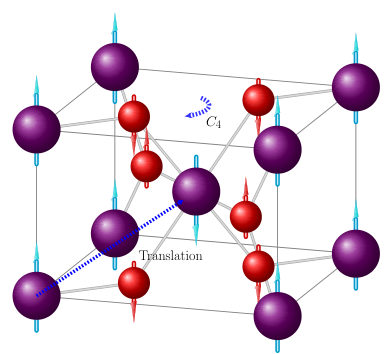

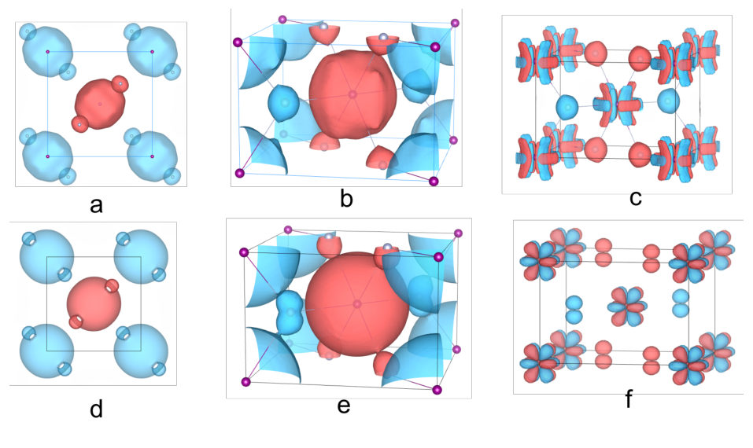
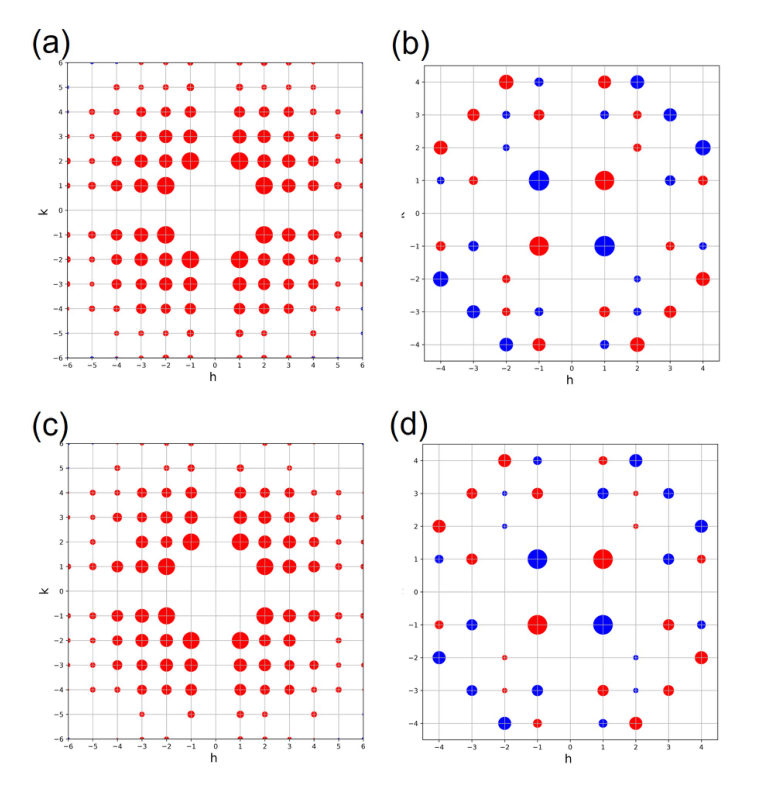
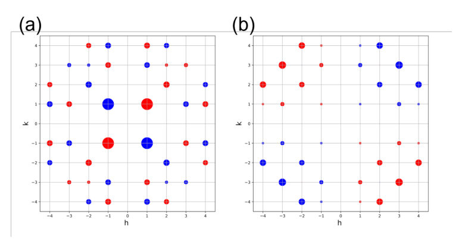
← Index · ← Previous · Next →
Authors: Vinay Kumar, Krishan Joshi, Claudio Cicconetti
Type: theory · Category: quantum information and computing · PDF: https://arxiv.org/pdf/2608.30786v1
Analysis basis: full PDF text, analyzed in chunks
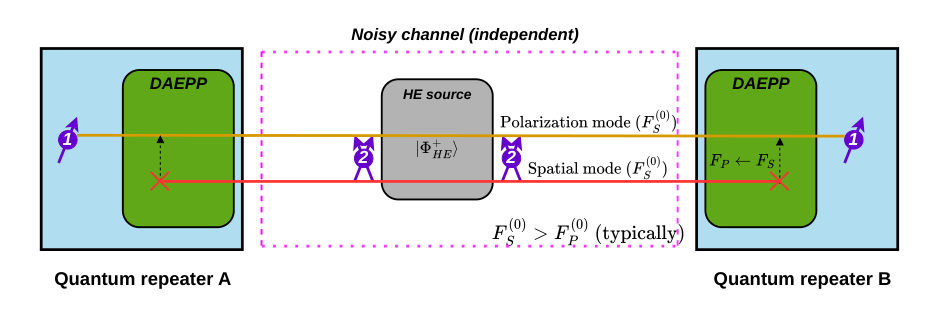
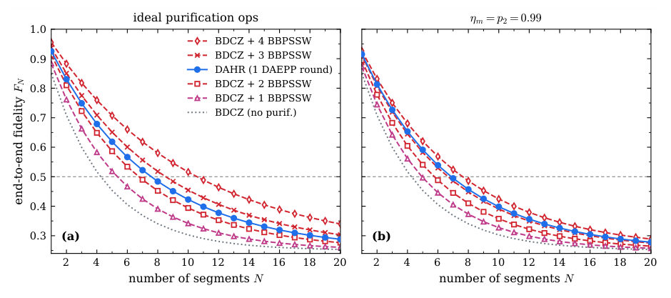
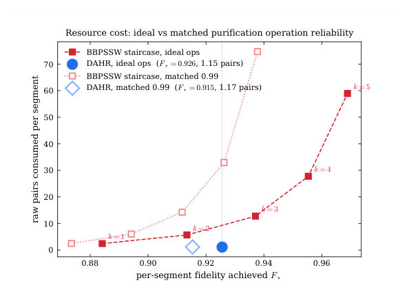
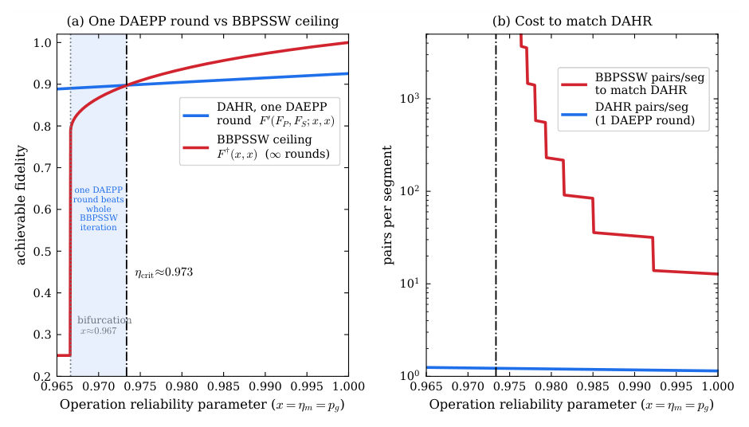
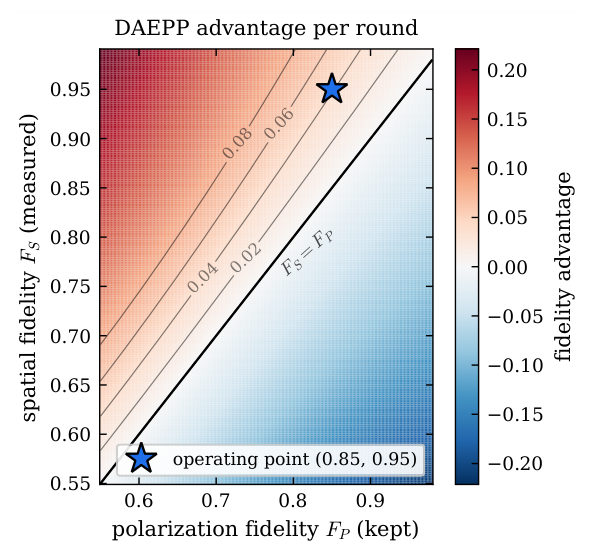
Summary. This paper introduces the DAHR protocol, a novel quantum repeater chain that enhances entanglement distribution by incorporating hyperentanglement-assisted purification (DAEPP) at every segment. By deriving a new fidelity recursion, the authors prove that DAHR is significantly more resource-efficient than established methods like BBPSSW purification, especially at low operating fidelities.
Why it may be interesting. This work provides a concrete, theoretically derived improvement to quantum network protocols, directly impacting the feasibility and scaling of quantum communication infrastructure.
Main problem. The primary goal is to improve the efficiency of entanglement distribution over long distances in quantum networks by developing a superior quantum repeater chain protocol.
Main result. The proposed DAHR protocol, which integrates hyperentanglement-assisted purification (DAEPP) into the repeater chain, significantly outperforms existing methods, requiring fewer resource pairs to achieve the same fidelity.
Method. The authors derive a closed-form, end-to-end fidelity recursion by embedding the DAEPP step into the standard BDCZ entanglement swapping scheme.
Model / system. The system is modeled as a linear chain of N segments, utilizing hyperentangled photon pairs encoding independent states across multiple degrees of freedom (e.g., polarization and spatial modes).
Key observables. End-to-end fidelity ($F^N$), resource consumption (number of entangled pairs consumed per segment).
Important parameters / regimes. Operation reliability threshold, initial polar/spatial fidelities ($F_P, F_S$), and the number of purification rounds ($k$).
Assumptions / limitations. The analysis assumes the spatial DOF is the more robust mode ($F_S > F_P$) and uses the general Werner model for purification analysis.
Figures summary. Figure 2 compares the end-to-end fidelity ($F_N$) versus the number of segments ($N$) for raw BDCZ, BDCZ with $k$ BBPSSW rounds, and the proposed DAHR protocol, showing DAHR's superior performance.
Paper structure. The paper first reviews existing repeater limitations, then derives the DAEPP fidelity, and finally constructs the DAHR protocol by integrating DAEPP into the BDCZ recurrence relation, concluding with a strict resource lower bound comparison.
Linear quantum repeater chains based on Werner-state purification (the BBPSSW protocol) and entanglement swapping (the BDCZ scheme) are fundamental to entanglement distribution in quantum networks. However, they operate under a stringent operation reliability threshold and rely on resource-intensive recurrence purification rounds, each consuming two entangled pairs to probabilistically produce one. In the literature, hyperentanglement has been proposed to exploit multiple degrees of freedom (DOF), such as polarisation and spatial modes, to encode independent entangled states within a single photon pair. This has led to the definition of DAEPP (DOF-Assisted Entanglement Purification Protocol), which we propose to integrate with the BDCZ scheme, resulting in a chain protocol that we call DAHR (DOF-Assisted Hyperentanglement Repeater). The DAEPP step distils the fidelity of a DOF by consuming other(s). In this work, we propose and analyse a DAHR variant which integrates DAEPP at every segment of an end-to-end path combined with BDCZ. We derive a closed-form end-to-end fidelity recursion that embeds single-segment DAEPP into the BDCZ scheme and give a strict resource lower bound for any BDCZ baseline utilising BBPSSW purification to match DAHR's per-segment effective fidelity. At a representative asymmetric operating point informed by prior experiment, we show numerically that matching DAHR's single-photon-pair performance requires two to three rounds of BBPSSW purification. Additionally, below a critical operation reliability, no amount of BBPSSW rounds matches DAHR's one DAEPP round performance.
Authors: Naihong Hu, Futao Wang
Type: theory · Category: quantum information and computing · PDF: https://arxiv.org/pdf/2608.31011v1
Analysis basis: full PDF text, analyzed in chunks
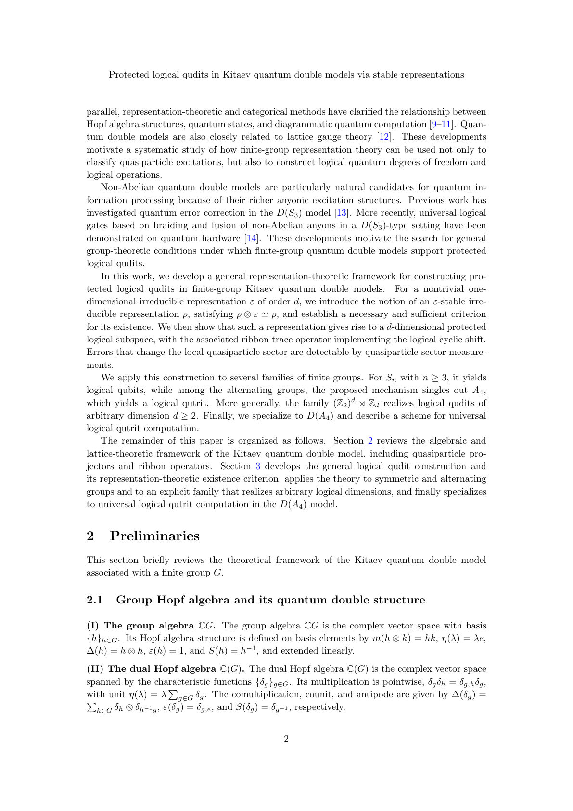
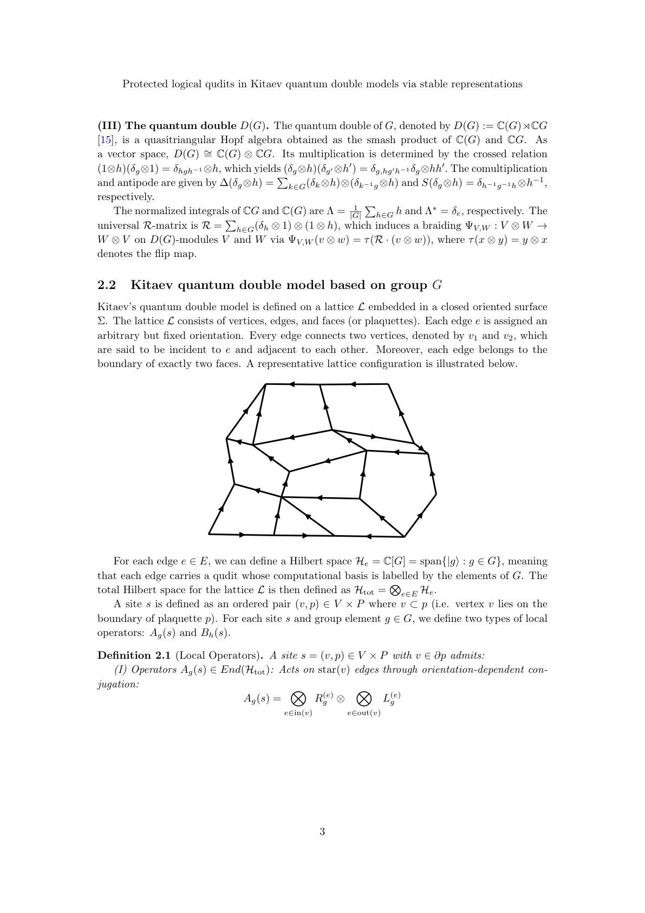
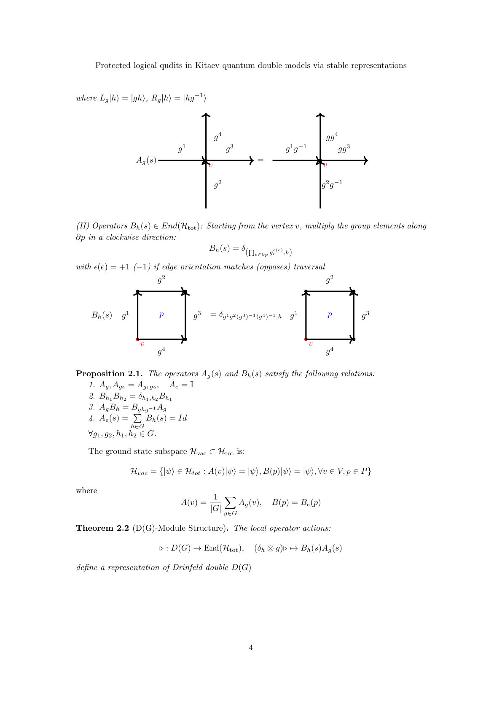
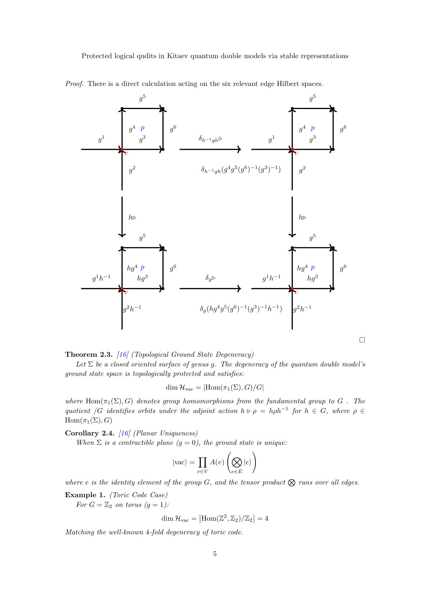
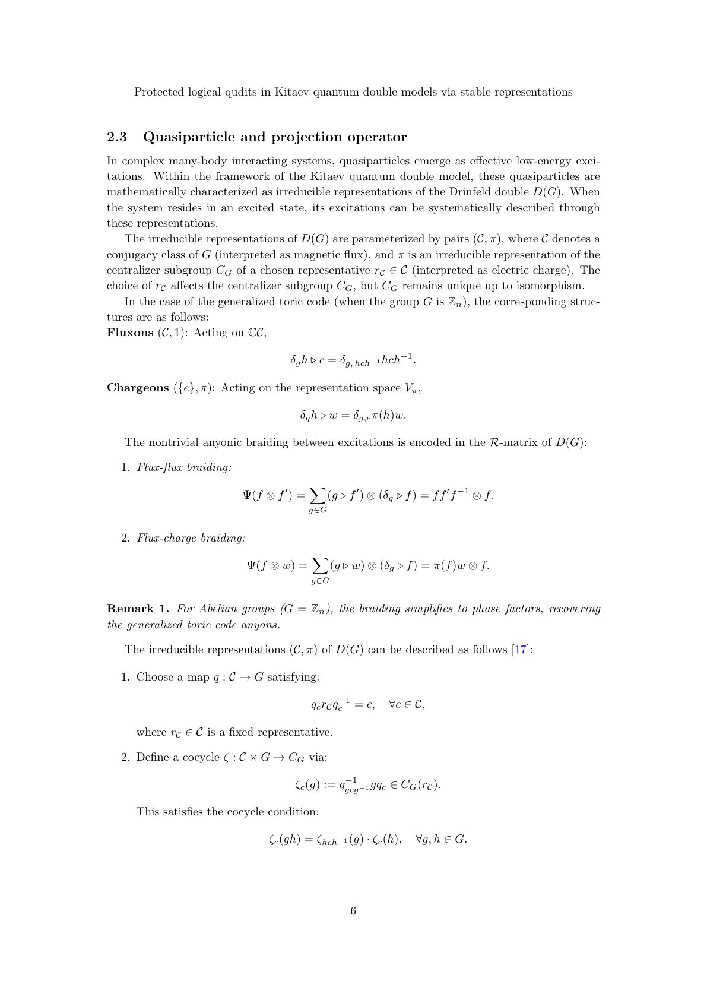
Summary. This paper develops a powerful representation-theoretic method to construct fault-tolerant logical qudits within Kitaev quantum double models. By analyzing stable representations, the authors establish existence criteria and demonstrate the realization of qudits for groups like $S_n$ and $A_4$. Ultimately, they show how these structures support universal quantum computation, advancing the theory of topological quantum computation.
Why it may be interesting. This work provides a rigorous mathematical link between abstract group theory (representation theory) and the physical realization of robust quantum information storage and computation, which is fundamental to quantum computing theory.
Main problem. The paper aims to develop a representation-theoretic framework to construct and characterize protected logical qudits for fault-tolerant quantum computation.
Main result. The construction successfully yields protected logical qudits for various groups, including logical qubits for $S_n$ and a logical qutrit for $A_4$, and demonstrates universal quantum computation for the $D(A_4)$ model.
Method. The methodology involves using the representation theory of Kitaev quantum double models, specifically identifying $\epsilon$-stable irreducible representations to define the protected logical subspace.
Model / system. The physical model is the Kitaev quantum double model, defined over a lattice embedded in a closed oriented surface $\Sigma$, based on a finite group $G$. The protection mechanism relies on the ground state subspace defined by local vertex and plaquette operators.
Key observables. Logical subspace dimension ($d$), logical operators ($X_L$, Hadamard), and the existence of stable representations.
Important parameters / regimes. The dimension $d$ of the logical qudit, which is determined by the structure of the stable representations.
Assumptions / limitations. The analysis assumes the validity of the Kitaev quantum double model structure and the existence of specific stable representations for the chosen groups.
Figures summary. The notes mention the structure of local operators ($A_g(s), B_h(s)$) and the character tables for $A_4$ and $D(A_4)$, which characterize the underlying group structure.
Paper structure. The paper progresses by first establishing the general representation-theoretic framework for protected qudits, then applying this to specific groups ($S_n, A_4$), and finally demonstrating universal quantum computation using the $D(A_4)$ structure.
Fault-tolerant quantum computation requires robust protection of encoded quantum information. In this work, we develop a representation-theoretic framework for constructing protected logical qudits in finite-group Kitaev quantum double models. By introducing $\varepsilon$-stable irreducible representations, we establish a necessary and sufficient existence criterion and derive ribbon--projector commutation relations that yield a $d$-dimensional protected logical subspace. We apply this construction to symmetric and alternating groups, obtaining logical qubits for $S_n$ ($n\ge 3$) and a logical qutrit for $A_4$. Moreover, the family $(\mathbb Z_2)^d\rtimes\mathbb Z_d$ realizes protected logical qudits of arbitrary dimension $d\ge 2$. Finally, for $D(A_4)$, we describe a scheme for universal logical qutrit computation using ribbon-based logical operations.
Authors: Khaled Jebari, Luiz Anet Neto, Ramesh Pyndiah, Jean-Louis de Bougrenet de la Tocnaye
Type: theory · Category: quantum information and computing · PDF: https://arxiv.org/pdf/2608.30775v1
Analysis basis: full PDF text, analyzed in chunks
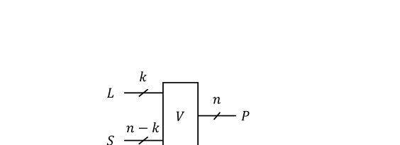
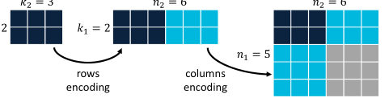
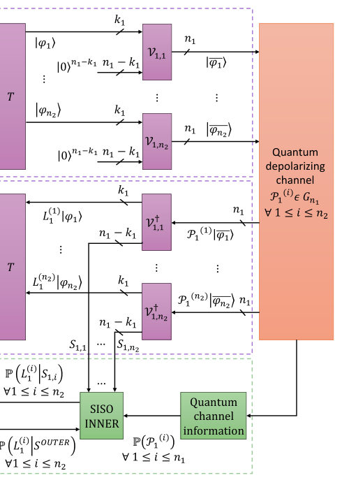
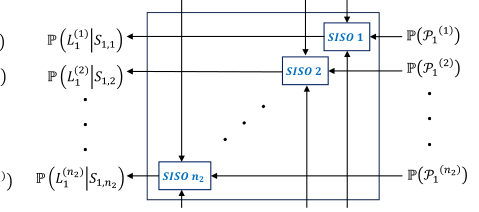
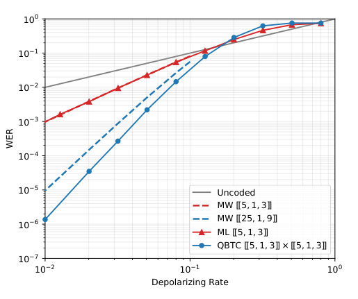
Summary. This paper introduces Quantum Block Turbo Codes (QBTC) as a powerful framework for quantum error correction, extending classical turbo coding concepts to the quantum domain. It details an iterative decoding algorithm that exchanges soft information between constituent code decoders. The work demonstrates that QBTCs achieve superior error correction rates, exhibiting a measurable 'turbo decoding effect' for multiple logical qubits.
Why it may be interesting. It provides a structured, iterative decoding framework for quantum codes that mimics successful classical techniques, offering a pathway to better performance in fault-tolerant quantum computation.
Main problem. The paper develops a theory and decoding algorithm for Quantum Block Turbo Codes (QBTC), aiming to improve quantum error correction performance by creating a quantum analog of classical product codes.
Main result. QBTCs allow for flexible encoding and decoding using iterative soft-information exchange between inner and outer decoders, demonstrating a clear 'turbo decoding effect' when using larger constituent codes.
Method. The core method involves an iterative maximum likelihood decoding technique that exchanges soft information between row and column decoding blocks, analogous to classical turbo decoding.
Model / system. The system uses Quantum Error Correction Codes (QECCs), specifically stabilizer codes, which are combined in a product structure using two constituent codes, $C_1$ and $C_2$. The encoding is implemented via a unitary transformation $V$ acting on physical qubits.
Key observables. Logical error rates, syndrome measurements ($S$), and the performance comparison against minimum weight (MW) decoders.
Important parameters / regimes. Code parameters $(n_1, k_1)$ and $(n_2, k_2)$, and the depolarizing channel noise rate.
Assumptions / limitations. The decoding process must operate at the level of logical operators due to inherent degeneracy in stabilizer codes, and the M & R procedure requires careful probabilistic handling.
Figures summary. Figures illustrate the encoding matrix structure, the global view of the 2D product code encoding/decoding, and detailed diagrams of the SISO inner and outer decoding blocks.
Paper structure. The paper progresses from establishing the quantum analogy to classical turbo codes, detailing the encoding/decoding using two constituent codes, formalizing the soft-information exchange via M & R procedures, and finally extending the theory to multi-layer product codes.
In the early nineties, the introduction of turbo codes revolutionized classical error correction. The idea was mainly applied on two types of codes: convolutional turbo codes and turbo product codes. The first type of codes was adapted to quantum error correction which initiated the theory of quantum serial turbo codes. In this paper, we present a theory for quantum block turbo codes, the quantum analog of the second type of turbo codes. We describe their iterative decoding algorithm and simulate their performances on a depolarizing channel for different constituent codes.
Authors: Boyang Chen, Tomoyuki Morimae, Takashi Yamakawa
Type: theory · Category: quantum information and computing · PDF: https://arxiv.org/pdf/2608.29493v1
Analysis basis: full PDF text, analyzed in chunks
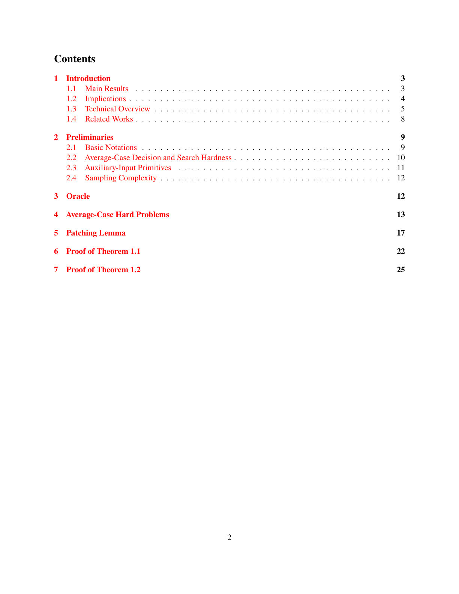
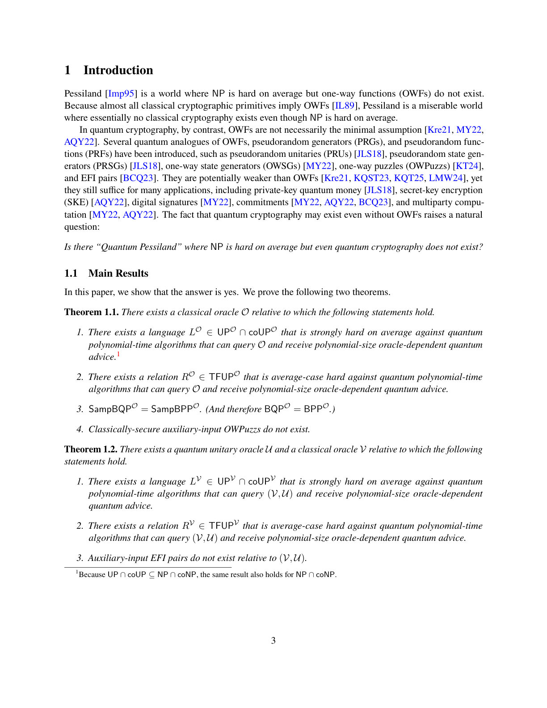
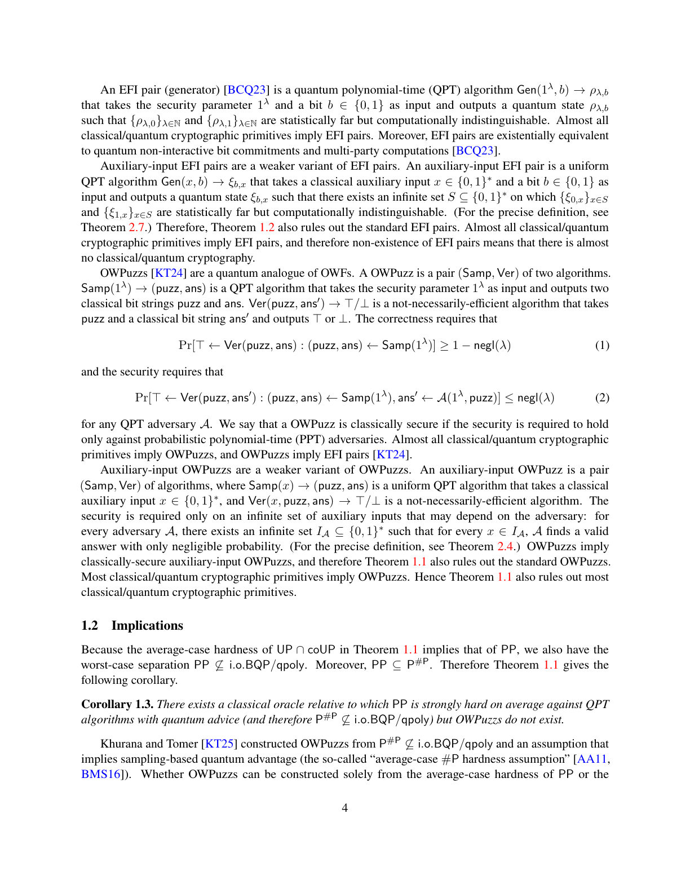
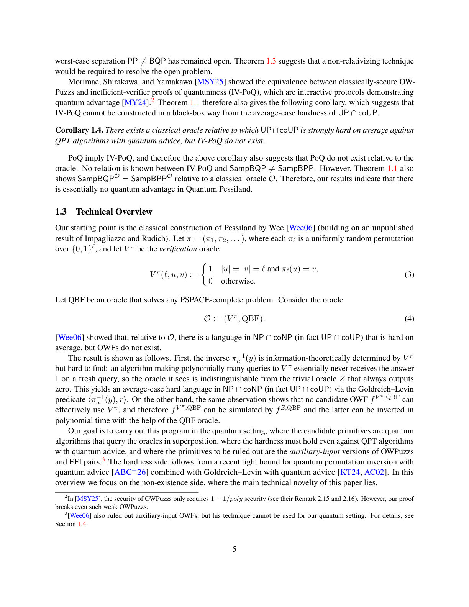
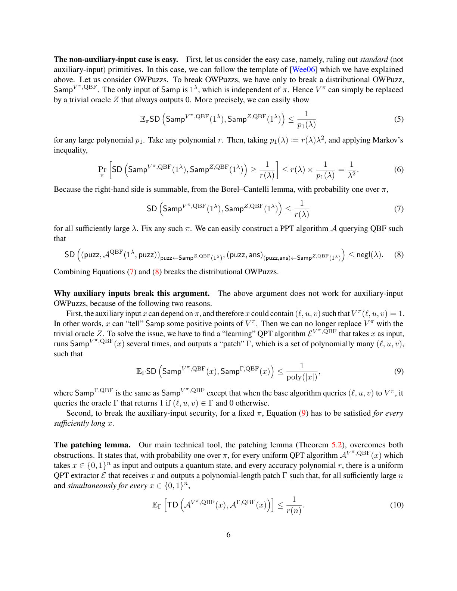
Summary. This paper explores 'Quantum Pessiland,' a theoretical model where computational hardness exists, but quantum cryptography fails. By constructing specific oracles, the authors prove that the non-existence of quantum primitives like EFI pairs is implied by average-case hardness assumptions. This work provides deep insights into the necessary computational assumptions required for quantum cryptography to function.
Why it may be interesting. While highly abstract, the work pushes the boundaries of quantum complexity theory by establishing precise boundaries on what quantum computation can achieve cryptographically, which is fundamental to understanding quantum information limits.
Main problem. The paper investigates the existence of 'Quantum Pessiland,' a theoretical setting where computational hardness (NP hard on average) holds, but no quantum cryptographic primitives (like OWFs or EFI pairs) can exist.
Main result. The authors prove the existence of such a world relative to specific oracles, demonstrating that almost no quantum cryptography exists under these conditions, and further showing no sampling-based quantum advantage.
Method. The proof relies on constructing specific quantum and classical oracles and using advanced techniques involving the Patching Lemma to show that the average-case hardness of $ ext{UP} \cap ext{coUP}$ implies the non-existence of necessary cryptographic primitives.
Model / system. The model is purely theoretical, based on quantum complexity theory, utilizing quantum oracles, quantum advice, and cryptographic primitives like auxiliary-input EFI pairs and OWPuzzs.
Key observables. Statistical distance (SD) between quantum distributions, average-case hardness of $ ext{UP} \cap ext{coUP}$, and the existence/non-existence of specific quantum primitives.
Important parameters / regimes. The analysis involves parameters related to the required accuracy of simulations, such as $r(n)$ and the number of repetitions $R$.
Assumptions / limitations. The results are conditional on the existence of specific oracles and rely on advanced techniques like the exponential moment to overcome the limitations of auxiliary inputs.
Paper structure. The paper builds upon classical Pessiland concepts, first establishing results relative to a classical oracle (Theorem 1.1), then extending to a quantum oracle (Theorem 1.2), and finally analyzing implications for sampling-based advantage and open problems in complexity theory.
Pessiland is a world where NP is hard on average but one-way functions (OWFs) do not exist [Impagliazzo 1995]. Because almost all classical cryptographic primitives imply OWFs [Impagliazzo and Luby 1989], there is almost no classical cryptography in Pessiland. On the other hand, quantum cryptography can exist even when OWFs do not [Kretschmer 2021; Morimae and Yamakawa 2022; Ananth, Qian and Yuen 2022]. Is there a quantum analogue of Pessiland where NP is hard on average but even quantum cryptography does not exist? In this paper, we show that such a miserable world, Quantum Pessiland, exists: there is a quantum oracle relative to which $UP\cap coUP$ is hard on average against quantum polynomial-time algorithms with quantum advice, yet auxiliary-input EFI pairs do not exist. We also show that there is a classical oracle relative to which $UP\cap coUP$ is hard on average against quantum polynomial-time algorithms with quantum advice, yet classically-secure auxiliary-input one-way puzzles (OWPuzzs) do not exist. Almost all quantum cryptographic primitives imply EFI pairs or OWPuzzs, and therefore these results mean that there is almost no quantum cryptography relative to these oracles. We further show that relative to the classical oracle, SampBQP = SampBPP, and therefore there is no sampling-based quantum advantage in Quantum Pessiland. Finally, because our average-case hardness of $UP\cap coUP$ implies $P^{\#P}\not\subseteq i.o.BQP/qpoly$, our result also implies that a non-relativizing proof technique is necessary to construct OWPuzzs solely from $P^{\#P}\not\subseteq i.o.BQP/qpoly$, which gives a partial negative answer to the open problem of [Khurana and Tomer 2025].
Authors: Anurag Ramesh, Bhuvanesh Sundar, Maxime Dupont, David E. Bernal Neira
Type: both · Category: quantum information and computing · PDF: https://arxiv.org/pdf/2608.28842v1
Analysis basis: full PDF text, analyzed in chunks
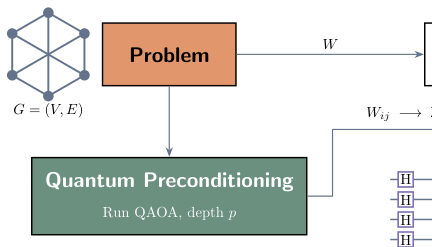
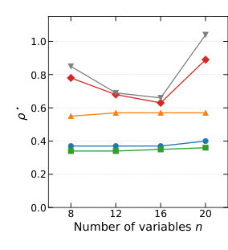
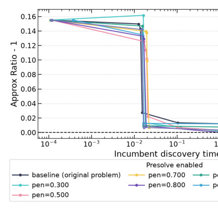
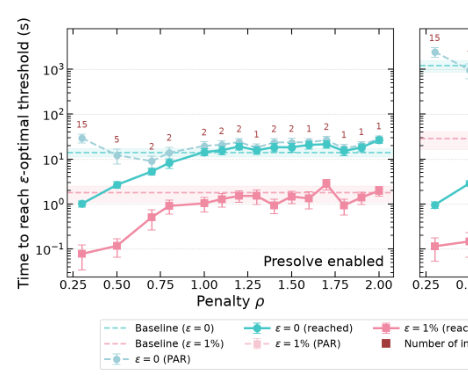
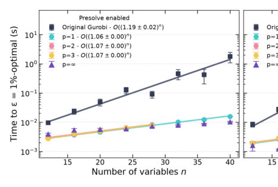
Summary. This work proposes using quantum preconditioning, derived from the QAOA algorithm, to enhance classical solvers for hard constrained optimization problems like graph bi-partitioning. By injecting problem-specific correlation information into the objective function, the method significantly speeds up the search for near-optimal solutions. This validates a powerful hybrid framework where quantum algorithms guide classical exact solvers.
Why it may be interesting. It demonstrates a concrete, actionable hybrid quantum-classical workflow, showing how quantum information (correlations) can be used to enhance the performance of established classical solvers for hard optimization problems.
Main problem. The paper addresses constrained combinatorial optimization problems, such as balanced graph bi-partitioning, which are NP-hard.
Main result. Quantum preconditioning, derived from QAOA correlations, significantly accelerates the discovery of high-quality incumbent solutions when guiding classical Mixed-Integer Programming (MIP) solvers.
Method. A hybrid approach is used where two-point correlations from the QAOA algorithm are used to construct a modified objective function that is passed to a classical MIP solver, while the original hard constraints are maintained.
Model / system. The problem is modeled on a weighted graph G=(V, E), aiming to partition vertices into two equal sets. The quantum component uses the QAOA ansatz to generate correlation information about the solution space.
Key observables. Speed and quality of finding near-optimal incumbent solutions; the correlation matrix Z; the time to reach an epsilon-optimal threshold.
Important parameters / regimes. QAOA depth (p), the penalty parameter (rho), and the graph size (n).
Assumptions / limitations. The core assumption is that the correlation matrix Z derived from QAOA encodes meaningful structural information that guides the classical solver effectively.
Figures summary. Figures illustrate the workflow showing QAOA generating Z to modify the MIP objective, and later figures compare the scaling of time to optimality using different rho selection strategies.
Paper structure. The paper first introduces the concept of quantum preconditioning for constrained optimization, then details its application to balanced graph bi-partitioning using QAOA, and finally analyzes the performance scaling and parameter selection strategies.
We study the effect of quantum preconditioning on constrained combinatorial optimization problems, focusing on balanced graph bi-partitioning. The proposed approach uses two-point correlations between decision variables derived from the Quantum Approximate Optimization Algorithm (QAOA) to construct a modified objective function that is subsequently provided to mixed-integer programming (MIP) solvers. The preconditioned MIP formulation retains the original hard constraint, and all incumbent solutions are evaluated under the original objective. Computational experiments on dense, weighted complete-graph instances show that the preconditioned problem instances reach near-optimal solutions faster, with most of the benefit already realized at the shallowest QAOA depth tested. Solver callback trajectories show this arises from earlier discovery of high-quality incumbents during the solution search. These results support a hybrid optimization framework in which quantum algorithms provide problem-specific information to guide classical exact MIP solvers.
Authors: Iurii Kibalin, Dalila Bounoua, José A. Rodriguez Velamazán, Oscar Fabelo, Navid Qureshi, Quentin Faure, Philippe Bourges, Victor Balédent, Jian-Rui Soh, Jeffrey Rau, Paul McClarty, Arsen Gukasov
Type: experiment · Category: other · PDF: https://arxiv.org/pdf/2608.29089v1
Analysis basis: full PDF text, analyzed in chunks




Summary. This work uses polarized-neutron diffraction on MnF2 to overcome the challenge of observing magnetic multipoles in altermagnets. By analyzing symmetry-dependent scattering intensities, the researchers successfully reconstructed the real-space spin density. The results confirm the existence of ferroic multipolar order, providing a powerful new experimental probe for hidden magnetic interactions in quantum materials.
Why it may be interesting. While focused on solid-state magnetism, the use of advanced diffraction techniques to probe higher-order, symmetry-protected magnetic moments (multipoles) is a powerful methodology applicable to understanding complex quantum ground states in correlated materials.
Main problem. The primary challenge is the direct, real-space observation of magnetic multipolar order parameters in altermagnets, which are theoretically predicted but experimentally elusive.
Main result. The study provides direct real-space evidence of ferroic multipolar order in the altermagnet MnF2, revealing both a finite fluorine ion moment and an anisotropic Mn magnetization.
Method. Polarized-neutron diffraction (PND) was employed, utilizing symmetry-selective magnetic reflections to reconstruct the three-dimensional magnetization density.
Model / system. The system studied is the prototypical altermagnet MnF2, which is characterized by specific magnetic symmetries that mandate the existence of multipolar order parameters like the magnetic triacontadipole O52.
Key observables. Reconstructed spin density, finite fluorine ion moment, anisotropic Mn magnetization, and the multipolar coefficients (e.g., P4^-2).
Important parameters / regimes. The analysis is sensitive to the magnetic field (1 T vs 6 T) and the separation of contributions from even and odd reflections.
Assumptions / limitations. The analysis assumes the magnetic order does not break lattice translation symmetry, and certain chiral terms are omitted due to the crystal's symmetry.
Figures summary. Figures illustrate domain structures (Mn and F moments) under different fields, and spin density maps show the spatial distribution of magnetic moments, confirming multipolar character.
Paper structure. The paper progresses by establishing the theoretical requirement for multipolar order in altermagnets, detailing the PND methodology for separating magnetic contributions, and finally presenting the results showing the measured moments confirming the predicted multipolar order.
Altermagnets are unconventional spin split magnets arising from the zero spin-orbit coupled limit. They host a magnetic multipolar order parameter yet direct real-space observation of these multipoles has remained elusive. Here we use polarized-neutron diffraction to reconstruct the three-dimensional magnetization density of the prototypical altermagnet MnF$_2$. By exploiting symmetry-selective magnetic reflections, we separate the dominant spherical Mn$^{2+}$ contribution from the much weaker anisotropic Mn magnetization and the covalent spin polarization of the fluorine ligands. The reconstructed spin density reveals a finite fluorine ion moment together with an anisotropic Mn magnetization consistent with the symmetry-allowed altermagnetic rank-5 magnetic multipole $O_{52}$(magnetic triacontadipole). These results provide direct real-space evidence of ferroic multipolar order in an altermagnet and establish polarized-neutron diffraction as a powerful probe of hidden magnetic multipoles in quantum materials.
Authors: Junqi Wang, Junyu Liu
Type: theory · Category: disordered systems and neural networks · PDF: https://arxiv.org/pdf/2608.28828v1
Analysis basis: full PDF text, analyzed in chunks
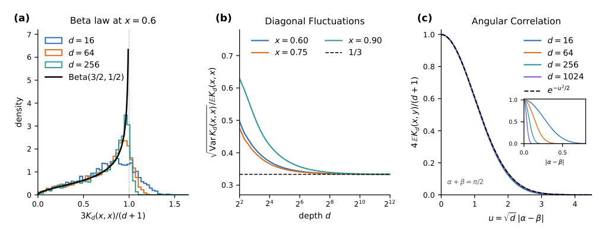
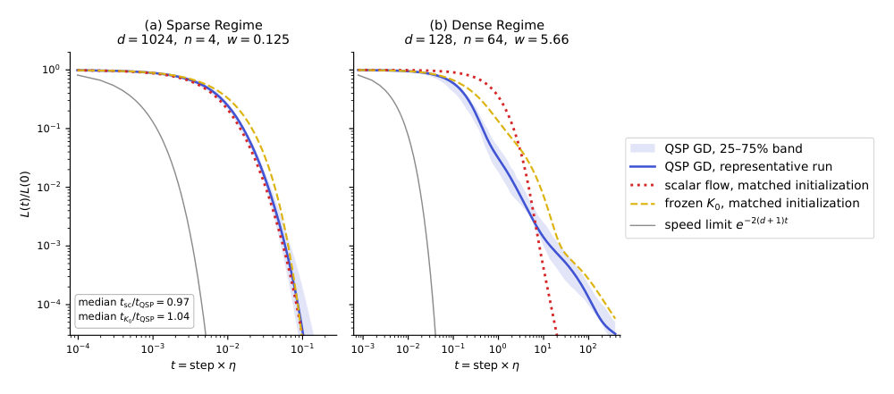
Summary. This work develops a rigorous theory for representation learning using Quantum Signal Processing (QSP) as the model. It analyzes the evolution of the quantum data geometry, proving that the dynamics simplify to integrable scalar flows in sparse data regimes but become complex and coupled in dense regimes. This provides a controlled, first-principles understanding of quantum machine learning dynamics.
Why it may be interesting. The rigorous mathematical treatment of learning dynamics using quantum resources provides a powerful theoretical framework for understanding how quantum information processing can model complex, non-linear machine learning phenomena.
Main problem. The paper aims to establish a controlled, first-principles theory for how quantum data geometry is learned during training, moving beyond the limitations of simple frozen-kernel models.
Main result. It proves that for sparse data, the full nonlinear QSP gradient flow converges to independent, integrable scalar equations, while in the dense regime, the dynamics become coupled and deviate from simpler predictions.
Method. The authors use rigorous mathematical analysis, including calculating exact means and variances of the Quantum Neural Tangent Kernel (QNTK) and deriving convergence bounds using techniques like Gronwall's inequality.
Model / system. The core model is Quantum Signal Processing (QSP), which is used as a solvable quantum model for representation learning. The dynamics are governed by the gradient flow of a loss function, leading to the evolution of the QNTK.
Key observables. The Quantum Neural Tangent Kernel (QNTK), the loss function $L(t)$, and the convergence error $\epsilon_T$ are key observables.
Important parameters / regimes. Depth ($d$), sample density ($n$), and the ratio $w = n/\sqrt{d}$ define the different learning regimes (sparse vs. dense).
Assumptions / limitations. The analysis assumes specific scaling conditions (e.g., $n^{3/2}[1 + \log n] / \sqrt{M} o 0$ for the sparse limit) and relies on the QSP model being an adequate representation of the learning process.
Figures summary. Figures illustrate the convergence of the normalized diagonal QNTK to a Beta distribution and show the QSP training trajectory deviating from scalar or frozen-kernel predictions in the dense data regime.
Paper structure. The paper progresses by first establishing the QSP model, calculating kernel statistics in the large-depth limit, then deriving convergence guarantees for the full nonlinear gradient flow, and finally comparing the full dynamics against simplified scalar and frozen-kernel approximations across sparse and dense regimes.
Representation learning begins when training changes the features that define similarity between data. A frozen-kernel model only reweights a fixed geometry. We establish quantum signal processing (QSP) as a solvable quantum model of the representation-learning regime. At arbitrary depth, we compute the exact mean and variance of its quantum neural tangent kernel, revealing an input-dependent angular geometry whose diagonal remains non-self-averaging even when the underlying unitary approaches Haar randomness. We also prove a sparse-data guarantee for the full nonlinear gradient flow without freezing or ensemble-averaging the kernel: the realized dynamics converges to an integrable scalar flow with a time-dependent kernel closure and explicit convergence times. A finite-depth speed limit holds for every data set and trajectory. At higher data density, numerical results show coupled evolution beyond both the scalar and frozen-kernel descriptions. These results give a controlled theory of learned quantum data geometry with provable training dynamics beyond the frozen limit.
Authors: Amir-Reza Negari, Zahra Baghali Khanian
Type: theory · Category: quantum information and computing · PDF: https://arxiv.org/pdf/2608.28897v1
Analysis basis: full PDF text, analyzed in chunks
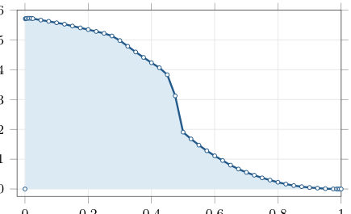
Summary. This paper rigorously analyzes the additivity of the Rényi Entanglement of Purification for classical two-qubit states. It establishes that the measure is non-additive for Rényi orders between 0 and 1, but it becomes additive for orders greater than or equal to 2. The open interval $1 \le \alpha < 2$ remains a key open problem.
Why it may be interesting. The study provides precise mathematical boundaries ($\alpha=1$ and $\alpha=2$) for when fundamental entanglement measures exhibit simple scaling properties, which is crucial for understanding resource theories in quantum information.
Main problem. The paper investigates the additivity property of the Rényi Entanglement of Purification ($ ext{EoP}$), a measure of total correlations, for classical states on two qubits.
Main result. The $ ext{EoP}$ is proven to be non-additive for Rényi orders $\alpha \in [0, 1)$ but is proven to be additive for $\alpha \ge 2$.
Method. The authors use analytical proofs involving comparing the two-copy case to the product of single-copy values, employing concavity arguments and norm inequalities.
Model / system. The study focuses on classical two-qubit states, $ ho_P = \sum p_{ij}|ij angle\langle ij|$, and their tensor products, analyzing the entanglement measure $ ext{E}_\alpha^P( ho_P)$.
Key observables. Rényi Entanglement of Purification ($ ext{E}\alpha^P$), Rényi entropy ($ ext{S}\alpha$), and the nonadditive fraction.
Important parameters / regimes. The Rényi order $\alpha$, specifically distinguishing regimes $0 \le \alpha < 1$, $1 \le \alpha < 2$, and $\alpha \ge 2$.
Assumptions / limitations. The analysis relies on the canonical purification being optimal for one copy, and the additivity for $\alpha \ge 2$ is derived from a norm inequality.
Figures summary. Figure 1 shows the nonadditive fraction of violating states for $0 < \alpha < 1$. Figure 2 summarizes the phase diagram, showing nonadditivity for $\alpha < 1$ and additivity for $\alpha \ge 2$.
Paper structure. The paper first solves the one-copy optimization exactly. It then proves nonadditivity for $\alpha < 1$ using specific state constructions. Subsequently, it proves additivity for $\alpha \ge 2$ using norm inequalities, leaving the interval $1 \le \alpha < 2$ open.
Entanglement of purification is a fundamental measure of total correlations whose additivity remains unresolved. We study its additivity for classical states on two qubits at different Rényi orders. For every $α\in[0,1)$, we prove nonadditivity within this family, witnessed by two copies of a single state. We first solve the one-copy optimization exactly for the entire family at every Rényi order. We then restrict the two-copy optimization to a natural finite set of purifications and exhibit one whose entropy is strictly below the product value. In contrast, for $α\in[2,\infty]$ we prove additivity under tensor products within this family. The interval $α\in[1,2)$, including the von Neumann case $α=1$, remains open, and we conjecture additivity there throughout the same family.
Authors: Jinfu Zhu, Guiqi Liu, Yuanhao Su, Hongyu Liu, Sijia Zhang, Panpan Kong, Qingqing Liu, Jianfa Zhao, Shaomin Feng, Jun Zhang, Haoyu Zheng, Jing Song, Luhong Wang, Fuyang Liu, Haozhe Liu, M. Bykov, Xiancheng Wang, Changqing Jin
Type: experiment · Category: other · PDF: https://arxiv.org/pdf/2608.30139v1
Analysis basis: full PDF text, analyzed in chunks
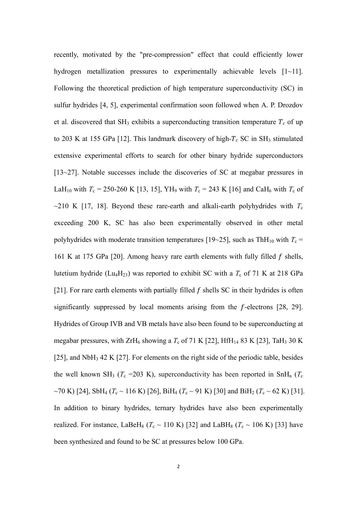
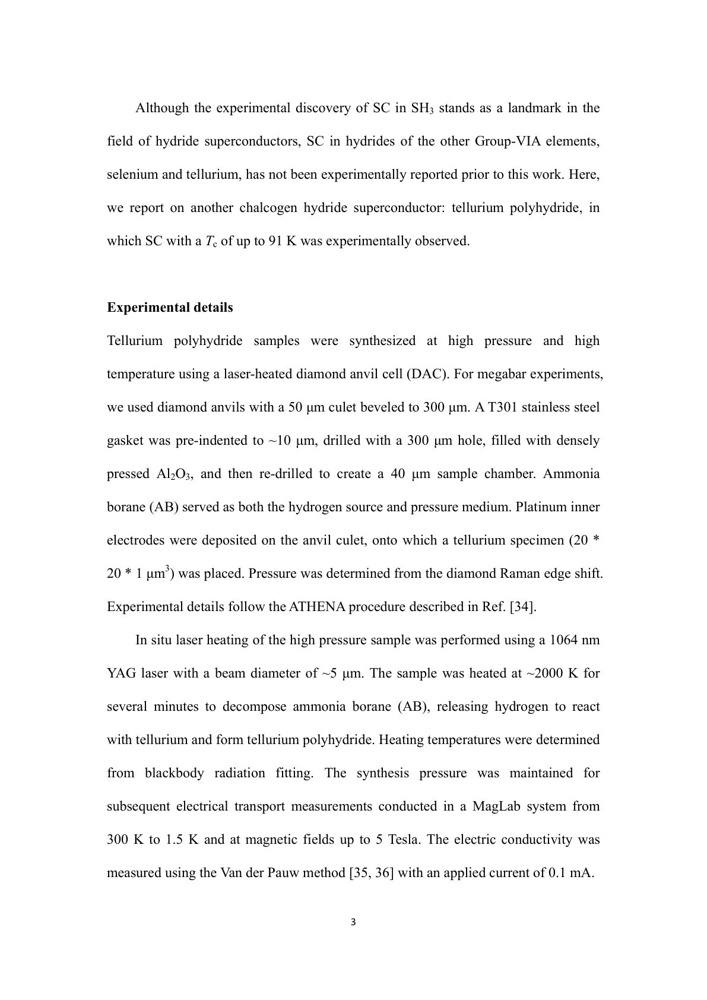
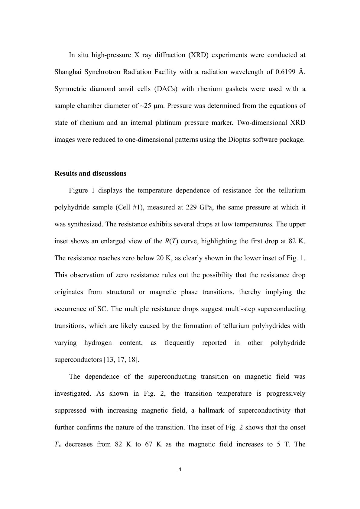
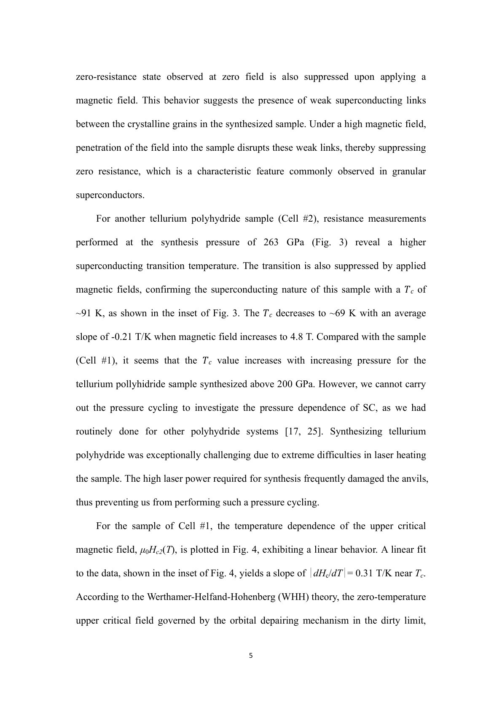
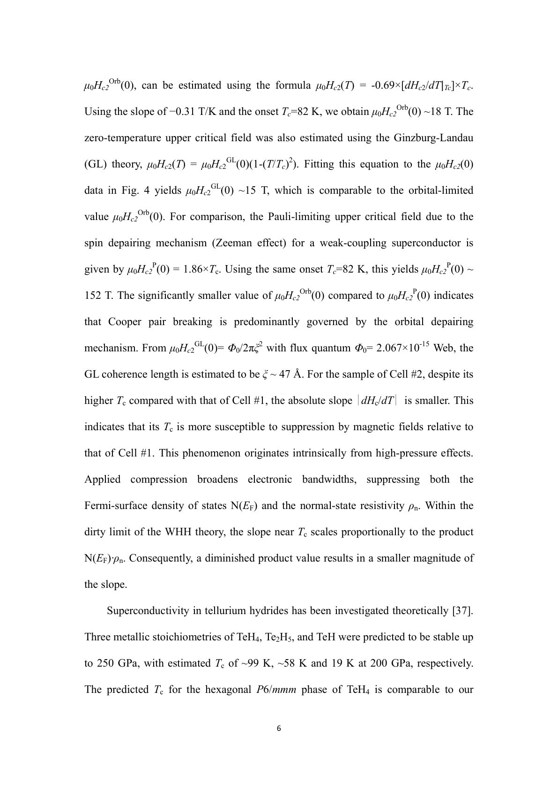
Summary. This work reports the discovery of superconductivity in tellurium polyhydride ($ ext{TeH}_4$) at high pressures, achieving a critical temperature of about 91 K. Using in situ transport and XRD measurements, the authors characterized the superconducting phase and determined key parameters like the coherence length. This adds to the growing body of knowledge regarding high-temperature superconductivity in hydrides.
Why it may be interesting. While focused on high-pressure solid-state physics, the study's rigorous measurement of superconducting parameters ($T_c$, $\mu_0H_{c2}$) and structural confirmation under extreme conditions provides valuable data points for understanding unconventional pairing mechanisms in correlated materials.
Main problem. The paper reports the experimental discovery of superconductivity in tellurium (Te) polyhydride under extreme high pressure.
Main result. Superconductivity was observed in the $ ext{TeH}_4$ phase with a critical temperature ($T_c$) of approximately 91 K at 263 GPa, establishing it as a new chalcogen polyhydride superconductor.
Method. The study employed in situ transport measurements (resistance vs. T and B) and high-pressure X-ray diffraction (XRD) within a diamond anvil cell.
Model / system. The physical system is tellurium polyhydride ($ ext{TeH}x$), specifically identifying the superconducting phase as $ ext{TeH}_4$. The structure is characterized by face-sharing $ ext{TeH}_2$ units.}$ cages forming quasi-molecular $ ext{H
Key observables. Superconducting transition temperature ($T_c$), zero resistance state, upper critical magnetic field ($\mu_0H_{c2}(T)$), and Ginzburg-Landau coherence length ($\xi$).
Important parameters / regimes. High pressures (up to 263 GPa), high temperatures, and applied magnetic fields (up to 5 T).
Assumptions / limitations. The analysis relies on fitting $\mu_0H_{c2}(T)$ data to WHH and GL theories, and the superconducting phase is assigned to the hexagonal $ ext{TeH}_4$ structure.
Figures summary. Figures detail the temperature and magnetic field dependence of resistance ($R(T)$) showing the superconducting transition, and plots of $\mu_0H_{c2}(T)$ derived from these measurements.
Paper structure. The paper follows a structure of reporting the experimental setup (DAC, in situ measurements), presenting the structural characterization (XRD confirming $ ext{TeH}_4$), and then detailing the transport measurements to confirm the superconducting transition and analyze its parameters ($T_c$, $\mu_0H_{c2}$, $\xi$).
We report experimental diacovery of superconductivity (SC) in tellurium (Te) polyhydride. The compound was synthesized at high pressure and high temperature conditions using a diamond anvil cell combined with a laser heating system. Subsequent in situ transport measurements at high pressures, performed as a function of temperature and applied magnetic field, revealed a superconducting transition with a critical temperature Tc about 91 K at 263 GPa. The superconducting phase is assigned to TeH4 with characterized face shared TeH12 cage forming quasi molecular H2 units based on synchrotron x-ray diffraction experiments. Analysis of the SC behavior at magnetic fields yielded a Ginzburg Landau (GL) coherence length of approximately 47 angstroms. Tellurium polyhydride thus becomes another chalcogen polyhydride superconductor in addition to the landmark discovery of the first polyhydride high Tc SC SH3.
Authors: Ruoting Dou, Shengjun Wu, Zeng-Bing Chen
Type: theory · Category: quantum information and computing · PDF: https://arxiv.org/pdf/2608.29068v1
Analysis basis: full PDF text, analyzed in chunks
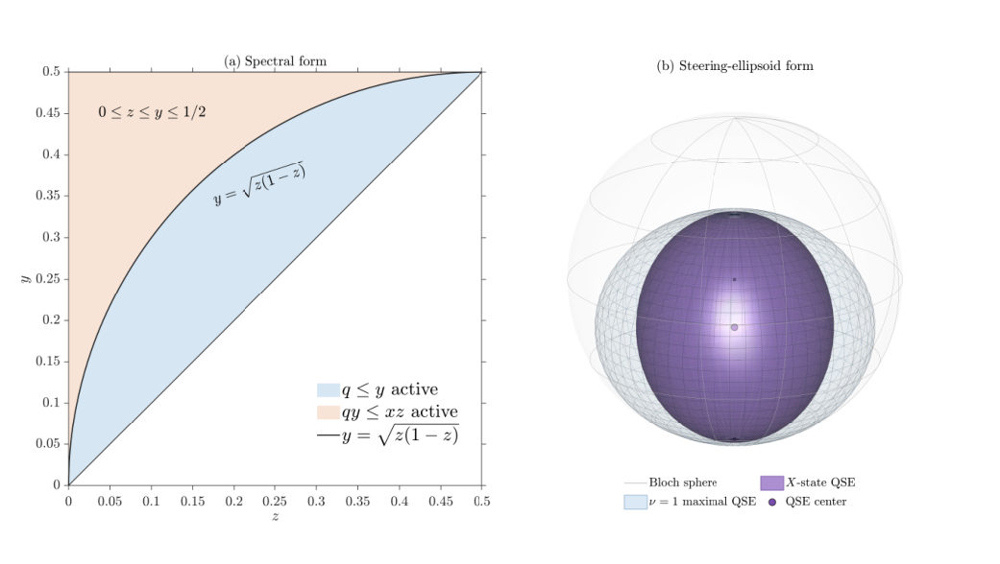
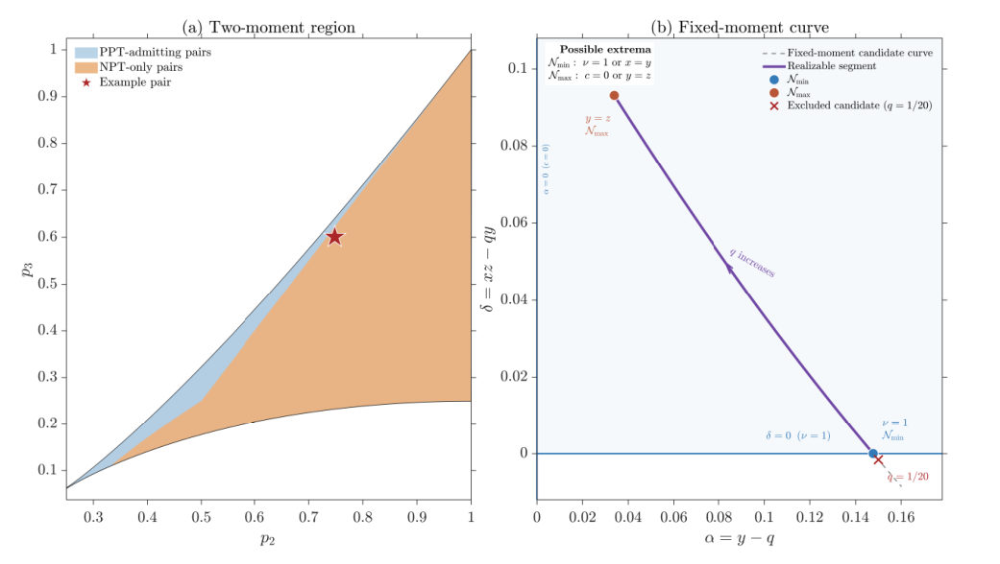
Summary. This paper solves the inverse eigenvalue problem for the partial transpose of two-qubit states, determining the exact conditions under which a given spectrum is physically realizable. It establishes necessary and sufficient conditions using simple algebraic inequalities ($q \leq y$ and $qy \leq xz$) and provides methods to calculate exact bounds on entanglement measures like negativity using only low-order moments.
Why it may be interesting. This work provides fundamental, quantitative constraints on the structure of entanglement and non-separability (via the partial transpose) for small quantum systems, which is crucial for understanding quantum resource theories.
Main problem. The paper solves the inverse eigenvalue problem for the partial transpose ($ ho^{\Gamma_B}$) of two-qubit quantum states, aiming to characterize all possible spectra that can arise from physical states.
Main result. For two qubits, the necessary and sufficient conditions for a spectrum $\lambda = (x, y, z, -q)$ to be realized by an NPT state are $q \leq y$ and $qy \leq xz$. Furthermore, exact bounds on negativity can be derived from the two lowest non-trivial partial-transpose moments ($p_2, p_3$).
Method. The analysis combines algebraic characterization (using moment constraints $p_k$) with geometric interpretations (relating constraints to allowed regions in parameter space, like the quantum steering ellipsoid).
Model / system. The system is a bipartite quantum state $ ho$ defined on two qubits ($2 \otimes 2$). The core diagnostic tool is the partial transpose $ ho^{\Gamma_B}$, and the analysis extends to higher-dimensional qubit-qudit systems.
Key observables. Partial transpose spectrum $ ext{spec}( ho^{\Gamma_B})$, Negativity $N( ho)$, and Partial-Transpose (PT) moments $p_k = ext{Tr}[( ho^{\Gamma_B})^k]$.
Important parameters / regimes. The constraints $q \leq y$ and $qy \leq xz$ define the realizable spectral region; the moments $(p_2, p_3)$ define the boundary conditions for negativity extrema.
Assumptions / limitations. The analysis relies on extending results from the two-qubit case to general qubit-qudit systems and uses the two-copy Hilbert space structure to derive necessary conditions.
Figures summary. Figures illustrate the spectral and geometric forms, showing how the derived bounds ($q \leq y$ and $qy \leq xz$) define the projected domain for achievable spectra.
Paper structure. The paper develops a hierarchy of constraints: first, analyzing the spectrum via the two-copy space (Theorem 3); second, providing the complete characterization via eigenvalues (Theorem 4); and finally, establishing moment-based bounds on negativity (Theorem 6).
For a bipartite state $ρ$, information about the spectrum of its partial transpose $ρ^{Γ_B}$ can be inferred from measurements on multiple copies of $ρ$, without full state tomography. This raises a natural question: which eigenvalue lists can arise as $\operatorname{spec}(ρ^{Γ_B})$ for a density operator $ρ$? We completely solve this inverse eigenvalue problem for two qubits. Every nonnegative trace-one spectrum is realized as $\operatorname{spec}(ρ^{Γ_B})$ by some PPT state $ρ$, whereas an ordered candidate eigenvalue list $(x,y,z,-q)$, with $x\ge y\ge z\ge0$, $q>0$, and $x+y+z-q=1$, is realized by an NPT state iff $q\le y$ and $qy\le xz$. Sufficiency in the latter case is established by an explicit $X$ state whose quantum steering ellipsoid has center $c=(y-q)/(1-z)$ and normalized volume $V/V_{\max}(c)=qy/(xz)$, providing a geometric interpretation of the inequalities $q\le y$ and $qy\le xz$ as the allowed ellipsoid-center region and the fixed-center volume bound. Beyond this geometric picture, the two-qubit inverse theorem also yields exact negativity bounds from the two lowest nontrivial PT moments. Given fixed values of $p_2=Tr[(ρ^{Γ_B})^2]$ and $p_3=Tr[(ρ^{Γ_B})^3]$, we determine the exact minimum and maximum negativity over all two-qubit states subject to these moment constraints. When no PPT state is consistent with the pair $(p_2,p_3)$, the minimum is attained either at $x=y$ or $qy=xz$, while the maximum is attained either at $y=z$ or $q=y$. Finally, we show how the two-qubit inequalities persist as necessary constraints for the inverse eigenvalue problem in qubit--qudit systems.
Authors: Erkut Tekeli
Type: theory · Category: quantum information and computing · PDF: https://arxiv.org/pdf/2608.29422v1
Analysis basis: full PDF text, analyzed in chunks
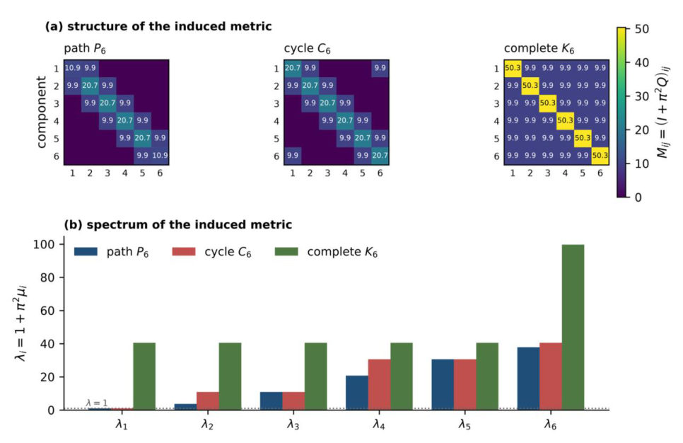
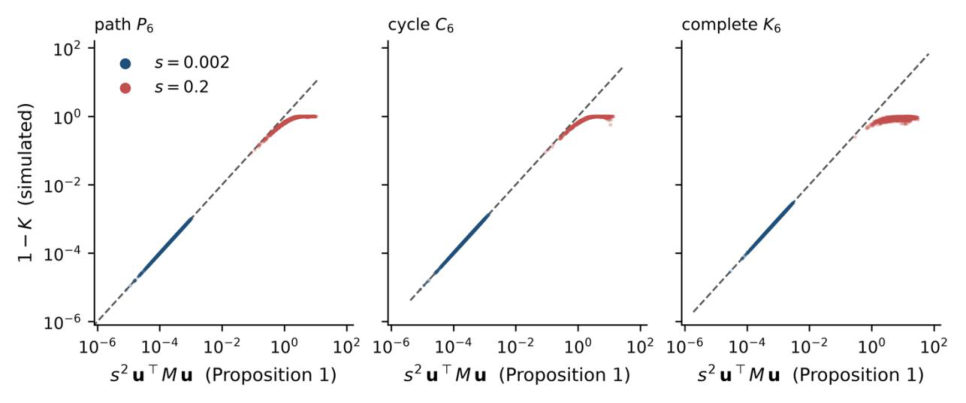
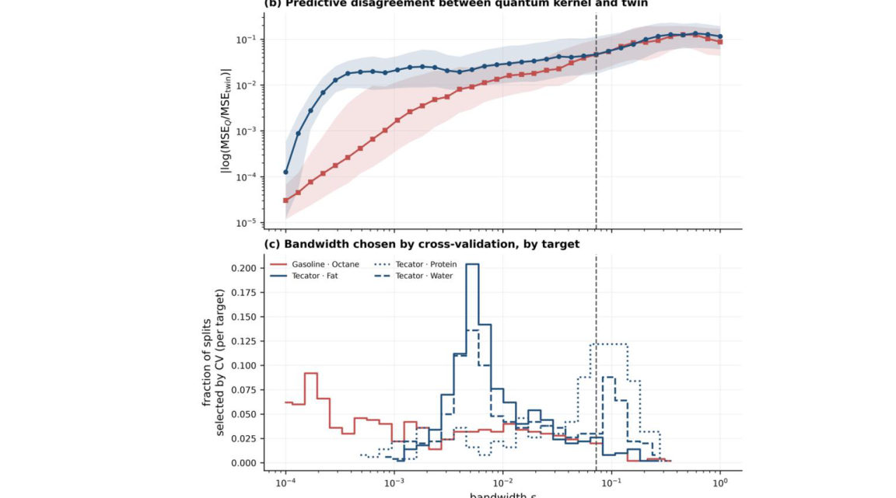
Summary. This paper derives a closed-form classical surrogate for the kernel induced by the ZZ feature map in quantum kernel regression. It proves that in the small-bandwidth limit, the quantum kernel behaves like an anisotropic Gaussian kernel whose metric depends on the graph's Laplacian. This finding allows the quantum circuit to be removed from the pipeline without losing predictive accuracy, offering significant computational simplification.
Why it may be interesting. It provides a concrete, analytically tractable classical approximation for a quantum feature map kernel, allowing researchers to bypass computationally expensive quantum simulations for kernel-based ML tasks.
Main problem. The paper addresses the theoretical gap in understanding quantum kernel methods, specifically deriving a closed-form classical surrogate for the kernel induced by the ZZ feature map.
Main result. The induced kernel is shown to be, to leading order, an anisotropic Gaussian kernel whose metric is determined by the signless Laplacian of the entanglement graph ($M = I + \pi^2 Q$).
Method. The analysis uses small-bandwidth Taylor expansion of the kernel overlap function and relates the resulting quadratic form to the graph's Laplacian structure.
Model / system. The model is quantum kernel regression utilizing a data-encoding circuit, specifically focusing on the ZZ feature map applied to an entanglement graph $G$.
Key observables. The induced metric $M = I + \pi^2 Q$, the test error comparison against classical methods, and the persistence of the quadratic structure.
Important parameters / regimes. The bandwidth ($s$), the entanglement graph structure ($G$), and the phase convention used in the feature map.
Assumptions / limitations. The derivation relies on the small-bandwidth expansion, and the authors note that the resulting metric should be treated as a pseudometric for deeper circuits.
Figures summary. Figures illustrate the induced metric $M=I+\pi^2 Q$ and its spectrum for various entanglement graphs (Path, Cycle, Complete) confirming the derived mathematical structure.
Paper structure. The paper progresses by deriving the kernel overlap using Taylor expansion, establishing the quadratic form in the small-bandwidth limit, deriving the explicit classical surrogate metric based on the graph Laplacian, and finally validating this surrogate against empirical spectroscopic benchmarks.
Quantum kernel methods lose their advantage over classical kernels once the encoding bandwidth is tuned, and bandwidth-tuned quantum kernels have been shown to resemble radial basis function kernels closely. The analytical support for that observation rests on separable encoding circuits and captures entangling circuits only qualitatively. We close this gap for the ZZ feature map. We prove that in the small-bandwidth regime the induced kernel is, to leading order, an anisotropic Gaussian kernel with metric M = I + pi^2 Q, where Q is the signless Laplacian of the entanglement graph, and that the quadratic structure persists at every circuit depth as a pullback of the Fubini-Study metric. The anisotropy depends entirely on a phase convention: under the unshifted convention the metric is the identity irrespective of entanglement, which explains the isotropic resemblance previously reported. The derivation is verified against direct simulation for path, cycle and complete entanglement graphs, with relative error below 10^-3. The corresponding classical kernel requires no fitted parameters and no quantum simulation. Compared with the quantum kernel across two near-infrared spectroscopic benchmarks, four targets, five preprocessing pipelines and 100 resampled splits per cell, the paired 95% bootstrap interval contains zero in 18 of 20 cells, the typical relative difference in test error is 2.7%, and the two families select the same preprocessing pipeline in 96% of splits. The regime in which the reduction fails begins at the same bandwidth on both datasets and adds no robust predictive value: restricting the grid to the classical regime improves mean test error by 3.8%, a gain that an equally large random restriction does not reproduce. The quantum circuit can thus be removed without detectable predictive loss, and we can state precisely which classical kernel it was computing.
Authors: Wei Song, Xiao-Lan Zong, Ming Yang
Type: theory · Category: quantum information and computing · PDF: https://arxiv.org/pdf/2608.29707v1
Analysis basis: full PDF text, analyzed in chunks
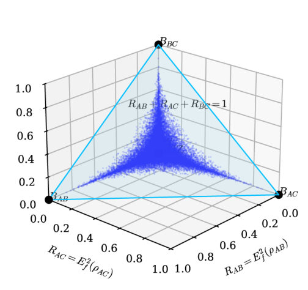
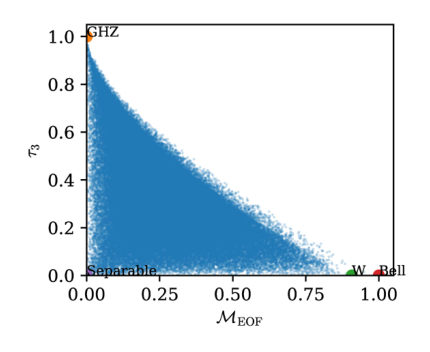
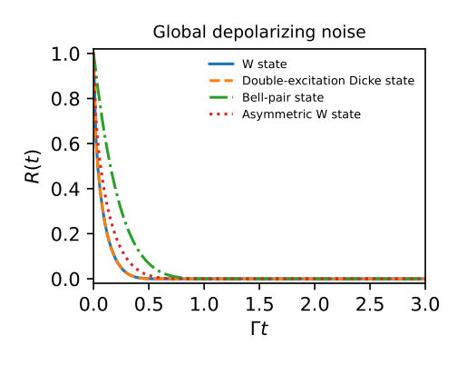
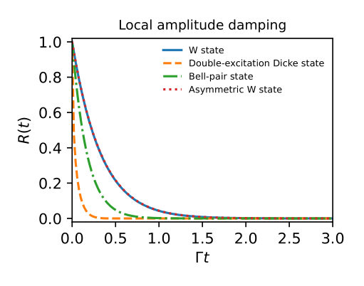

Summary. This paper establishes a tight global upper bound on the sum of pairwise squared entanglement of formation for three-qubit systems. It provides a natural geometric picture by mapping the three bipartite entanglements to coordinates constrained by this inequality. Furthermore, it analyzes how this entanglement structure decays over time under various quantum noise models.
Why it may be interesting. The geometric mapping of entanglement into a constrained space provides a powerful, quantifiable tool for understanding multi-partite quantum correlations, which is fundamental to quantum information theory.
Main problem. The paper aims to derive a global upper bound on the sum of pairwise squared entanglement of formation ($ ext{EOF}^2$) in three-qubit systems, extending beyond traditional monogamy relations.
Main result. A global inequality $ ext{EOF}^2( ho_{AB}) + ext{EOF}^2( ho_{AC}) + ext{EOF}^2( ho_{BC}) \leq 1$ was derived for any three-qubit state, which is shown to be tight.
Method. The authors used mathematical techniques involving the binary entropy function and optimization over a polytope defined by entanglement measures to establish the global bound.
Model / system. The study focuses on three-qubit quantum systems ($ ho_{ABC}$), analyzing the entanglement structure using pairwise entanglement measures.
Key observables. Pairwise entanglement measures ($ ext{EOF}^2( ho_{XY})$), the sum $M_{ ext{EOF}}$, and the three-tangle ($ au_3$).
Important parameters / regimes. The bound value of 1, and the comparison between different state structures (Bell-pair vs. W state) regarding entanglement distribution.
Assumptions / limitations. The analysis extends the bound from pure states to mixed states using convexity arguments, and later investigates dynamics under specific Markovian noise models.
Figures summary. Figure 1 illustrates the geometric constraint $R_{AB} + R_{AC} + R_{BC} \leq 1$ in 3D space, showing random states below the saturation plane. Other figures compare the decay of $MEOF$ under various noise channels for different initial states.
Paper structure. The paper first establishes the global static bound on $M_{ ext{EOF}}$ (Theorem 1), providing a geometric interpretation. It then analyzes the dynamics by studying how $M_{ ext{EOF}}$ decays under different Markovian noise models, comparing the robustness of different entangled states.
We derive a global bound on the sum of pairwise squared entanglement of formation in three-qubit systems. The bound is tight and can be saturated by states containing a maximally entangled bipartite pair with an uncorrelated third qubit. Moreover, using this relation, we can map the three bipartite entanglements to three coordinates, such that any three-qubit state corresponds to a point in three-dimensional space, thereby endowing this global inequality with a very natural geometric picture. Accordingly, the dynamical evolution can be interpreted as trajectories in this geometric space; we select representative initial states and investigate the dynamical behavior of the three pairwise entanglements under various Markovian noise models.
Authors: Andrea Coladangelo, Dakshita Khurana, Saachi Mutreja, Bhaskar Roberts, Joseph Slote, Avishay Tal
Type: theory · Category: quantum information and computing · PDF: https://arxiv.org/pdf/2608.31112v1
Analysis basis: full PDF text, analyzed in chunks
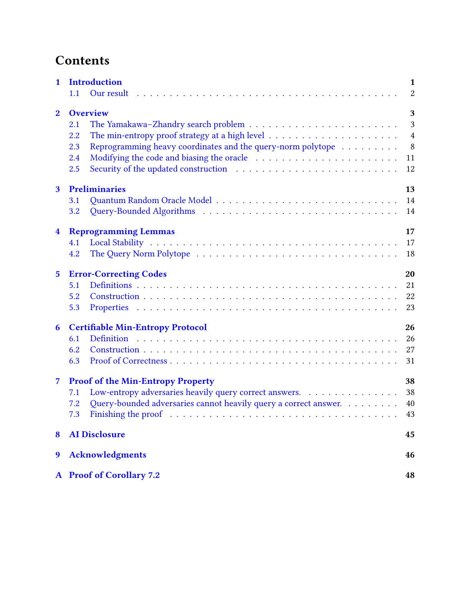
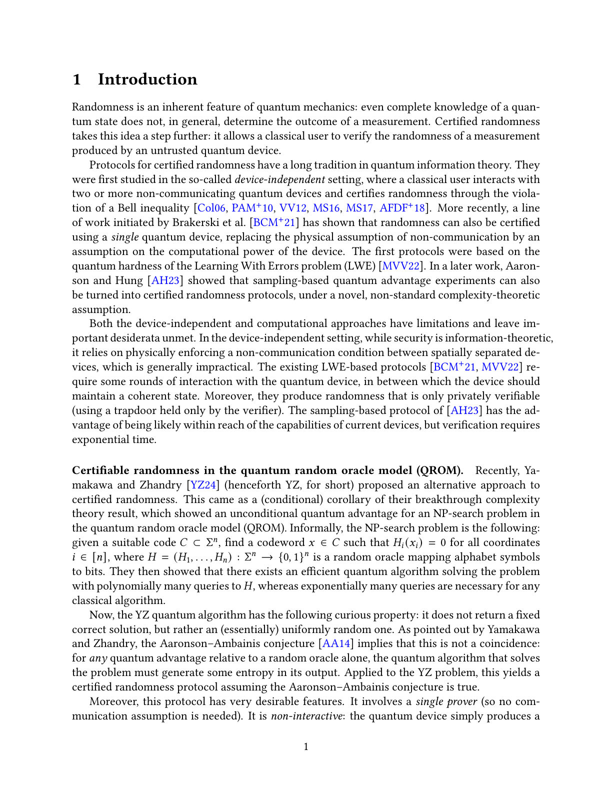
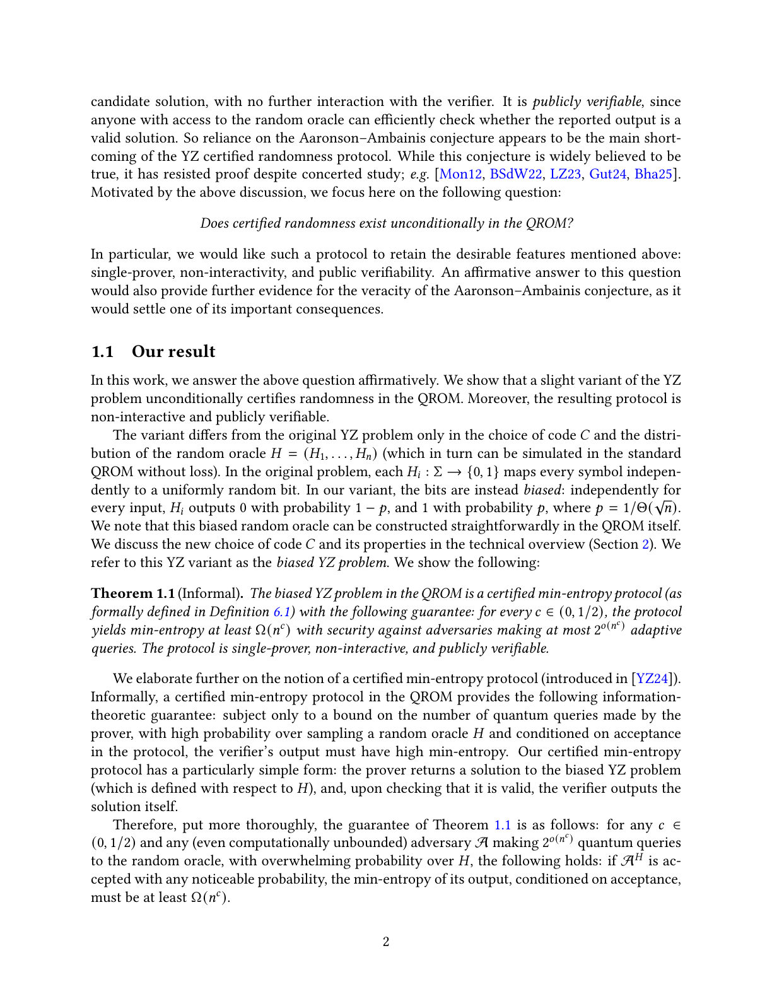
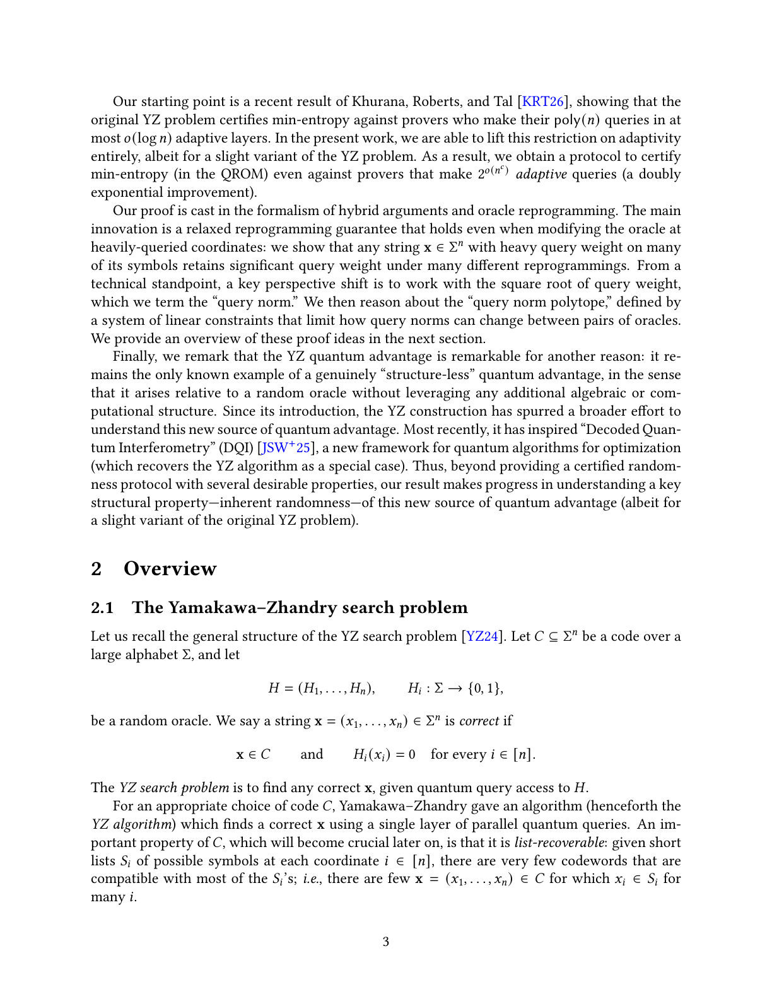
Summary. This paper develops a robust, unconditional protocol for extracting certified randomness in the Quantum Random Oracle Model. By employing novel mathematical tools like 'query norms,' the authors overcome limitations of prior work that required unproven conjectures or restricted the adversary's query depth. This advances the understanding of device-independent quantum information security.
Why it may be interesting. While highly theoretical, the techniques developed for bounding query complexity and establishing information-theoretic security in complex quantum models are foundational to quantum computation theory.
Main problem. The goal is to establish a protocol for obtaining unconditionally certified randomness in the Quantum Random Oracle Model (QROM) that is non-interactive and publicly verifiable.
Main result. The authors prove that the biased YZ problem in QROM yields a certified min-entropy protocol, achieving unconditional security without relying on unproven conjectures.
Method. The proof employs advanced techniques involving 'query norms' and 'query norm polytopes' to analyze the structure of the oracle queries, leading to contradiction arguments.
Model / system. The theoretical model is the Quantum Random Oracle Model (QROM), based on a variant of the Yamakawa-Zhandry search problem involving a random oracle $H$.
Key observables. Min-entropy guarantee ($\Omega(n^c)$), query norm, and the probability of violating certain oracle conditions ($\Pr[S]$).
Important parameters / regimes. The bias parameter $p$ of the random oracle, and the query depth/adaptivity bounds ($2^{o(n^c)}$).
Assumptions / limitations. The security proof is shown to hold against computationally unbounded adversaries, removing reliance on the Aaronson–Ambainis conjecture.
Paper structure. The paper builds from the general problem statement to defining the QROM setting, developing the technical machinery using query norms (Claim A and Claim B), and finally executing the contradiction proof using probability bounds (Lemma 7.3 and Lemma 7.7) to establish the main theorem.
We obtain a certified randomness protocol in the quantum random oracle model. The protocol is non-interactive and publicly verifiable with a classical verifier, and is based on Yamakawa and Zhandry's proof of quantumness [JACM'24]. We prove unconditional security of this protocol against adversaries making subexponentially-many adaptive quantum queries to the random oracle. Prior work on certified randomness relative to a random oracle additionally assumed the Aaronson--Ambainis conjecture or proved security only against low query-depth adversaries.
Authors: Dor Elimelech, Victor V. Albert, Alexander Barg
Type: theory · Category: quantum information and computing · PDF: https://arxiv.org/pdf/2608.28962v1
Analysis basis: full PDF text, analyzed in chunks
Summary. This paper extends the theory of quantum error correction by proving the existence of a single universal recovery map for approximate noise channels. It introduces an error-set theory quantified by two distances—worst-case and average-case—to guarantee uniform protection. This completes the picture of universal recovery in the approximate setting, which is crucial for practical quantum computation.
Why it may be interesting. The rigorous mathematical framework connecting structural properties of error sets (like the environment-leakage distance) directly to universal decoding guarantees is highly relevant for designing robust quantum hardware.
Main problem. The paper addresses extending the concept of 'universal recovery' from exact Quantum Error Correction (QEC) to the Approximate Quantum Error Correction (AQEC) setting.
Main result. They establish that a single recovery map can simultaneously correct every channel controlled by a given error set in the approximate setting, providing uniform average- and worst-case guarantees.
Method. The work develops an error-set theory for AQEC, utilizing two key distance metrics—the environment-leakage distance and the Knill–Laflamme Hellinger distance—to quantify approximate correctability.
Model / system. The model involves quantum information encoded in a code subspace $Q \subseteq \mathcal{H}$, subjected to noise modeled by quantum channels $\mathcal{N}$ controlled by an error set $\mathcal{E}$.
Key observables. Worst-case entanglement fidelity ($\mathcal{F}_{wc}$), Channel fidelity ($\mathcal{F}_{ch}$), Environment-leakage distance ($\zeta$), and Knill–Laflamme Hellinger distance ($\zeta_H$).
Important parameters / regimes. The approximation parameter $\epsilon$, and the two structural parameters $\zeta(\mathcal{E}, Q)$ and $\zeta_H(\mathcal{E}, Q)$.
Assumptions / limitations. The analysis relies on generalizing the adversarial error-set formulation of QEC to the approximate regime and employing techniques like Stinespring dilation for bounding errors.
Paper structure. The paper progresses by first defining the error-set AQEC model, then establishing bounds for optimal decoding errors using structural distances, and finally proving the existence of a single universal recovery map that achieves these bounds.
Universal recovery -- the existence of a single recovery map that corrects an entire family of error channels -- is a central feature of quantum error correction (QEC). In exact QEC, linearity guarantees that a code correcting a given error set also corrects every channel whose Kraus operators lie in its linear span, and that a single recovery map suffices for all such channels. Approximate quantum error correction (AQEC), which relaxes perfect recovery to recovery with controlled error, has traditionally lacked this structure. In a recent paper (arXiv:2607.22995), we developed a theory of approximate quantum error correction showing that a restricted form of linearity persists in the approximate setting, yielding uniform AQEC guarantees for the family of channels controlled by a given error set. In this work, we complete the picture by establishing the second half of universal recovery in the approximate setting: a single recovery map can simultaneously correct every channel controlled by a given error set. The error-set theory we proposed quantifies approximate correctability through two parameters: the environment-leakage distance, governing worst-case performance, and the Knill--Laflamme Hellinger distance, governing average-case performance. We show here that both quantities also control universal decoding. We further study the Petz map naturally associated with an error set as an explicit universal recovery, and obtain uniform average- and worst-case guarantees across the entire family of channels.
Authors: Johannes L. P. Steinschuld, Hendrik J. Bluhm, Lars R. Schreiber, Seyed Akbar Jafari
Type: theory · Category: other · PDF: https://arxiv.org/pdf/2608.29785v1
Analysis basis: full PDF text, analyzed in chunks
Summary. This paper establishes a symmetry-based theory for spin-orbit-valley coupling in silicon, revealing a strong, intrinsic Dresselhaus SOC that does not require interfaces or external fields. By treating the valley degree of freedom as a fundamental quantum variable, the authors predict measurable, robust signatures of valley-dependent spin splitting using techniques like magnetic field gradients.
Why it may be interesting. This work provides a fundamental theoretical framework linking crystal symmetry (valley degree of freedom) directly to spin-orbit coupling, offering new, intrinsic mechanisms for controlling spin and valley qubits in silicon quantum devices.
Main problem. To develop a symmetry-based theory characterizing the intrinsic source of Dresselhaus spin-orbit coupling (SOC) in silicon, independent of interfaces or external electric fields.
Main result. The theory reveals a bulk, intrinsic Dresselhaus SOC that is necessarily valley off-diagonal and significantly larger than typical interface-induced couplings. It also predicts robust, disorder-resistant valley splitting mechanisms.
Method. The authors employed symmetry analysis using the double X group and tight-binding calculations to construct symmetry-allowed Hamiltonians incorporating spin and valley degrees of freedom.
Model / system. The system is bulk silicon, modeled by incorporating spin ($\sigma$) and valley ($ au$) degrees of freedom. The analysis treats the valley degree of freedom as a symmetry-carrying quantum degree of freedom.
Key observables. Valley-dependent Zeeman splitting ($\Delta au E_Z$), spin-orbit-valley (SOV) coupling terms, and the $ au_3$ channel splitting.
Important parameters / regimes. The intrinsic bulk Dresselhaus coupling is predicted to be $>1$ order of magnitude larger than interface-induced SOC; the analysis involves magnetic field gradients and external fields ($B_z$).
Assumptions / limitations. The analysis relies on the structure of the double X group and the assumption that the SOC terms must be even under time-reversal (TR) symmetry.
Figures summary. Figures illustrate the two valleys in bulk Si and show spin textures for SOC effects; Tables list permissible spin-orbit terms and couplings.
Paper structure. The paper systematically builds the Hamiltonian using symmetry constraints, first identifying the intrinsic bulk Dresselhaus term, then analyzing how magnetic field gradients induce valley-dependent corrections to the Zeeman splitting, and finally predicting a robust $ au_3$ splitting mechanism.
We develop a symmetry-based theory of spin-orbit-valley coupling in silicon that reveals an intrinsic source of Dresselhaus spin-orbit coupling independent of interfaces or external electric fields. Treating the valley degree of freedom as a symmetry-carrying quantum degree of freedom, we show that the Dresselhaus interaction is necessarily valley off-diagonal and that a bulk contribution proportional to the valley Pauli matrix $τ_1$ is symmetry allowed. Tight-binding calculations yield a bulk coupling more than an order of magnitude larger than typical interface-induced spin-orbit coupling; achieving the same energy scale through the interface-induced mechanism would require electric fields roughly 50 times larger than typical fields. We further derive the symmetry-allowed spin-valley couplings generated by magnetic-field gradients and show how they account for the valley-dependent Zeeman splitting observed in micromagnet experiments. A slight tilt of the background magnetic field out of the plane produces an additional isotropic contribution linear in $B_z$, providing an experimentally accessible signature of the corresponding coupling constant. Finally, we predict a spin-independent micromagnet-induced valley splitting in the $τ_3$ channel, which is distinct from the $τ_{1,2}$ channels generated by alloy disorder and therefore remains robust against disorder-induced cancellation. These results establish valley symmetry as a fundamental ingredient in the spin-orbit physics of silicon and provide new mechanisms for controlling and probing spin and valley degrees of freedom in silicon quantum devices.
Authors: Yibin Wang
Type: theory · Category: quantum information and computing · PDF: https://arxiv.org/pdf/2608.29333v1
Analysis basis: full PDF text, analyzed in chunks
Summary. This work establishes that determining if a supersymmetric quantum Hamiltonian on a 1D chain has a zero-energy ground state is QMA1-complete. The authors achieve this by constructing a rigorous reduction from the Quantum Satisfiability problem. This result places the problem of finding exact zero modes within the realm of computationally hard problems, linking condensed matter physics to quantum computation theory.
Why it may be interesting. It provides a deep connection between fundamental concepts in quantum many-body physics (supersymmetry, ground state properties) and the computational complexity class QMA1, suggesting that finding exact ground states in these systems is computationally hard.
Main problem. The paper determines the computational complexity of deciding whether a supersymmetric quantum Hamiltonian on a chain possesses an exact zero-energy ground state.
Main result. The zero-energy problem for both Hermitian and nilpotent supersymmetric Hamiltonians on a chain is proven to be QMA1-complete.
Method. The proof involves a polynomial-time reduction from the Quantum Satisfiability problem (QSAT) on a line of sites, preserving the spectral gap structure.
Model / system. The study focuses on supersymmetric quantum systems whose interactions are restricted to a one-dimensional chain. The Hamiltonians are constructed using supercharges ($H=Q^2$ or $H=\{Q, Q^\dagger\}$) acting on fermionic modes.
Key observables. Zero energy (ground state energy), spectral gap, and the existence of zero modes.
Important parameters / regimes. Geometric locality, the size of the chain, and the polynomial bounds derived from the reduction.
Assumptions / limitations. The reduction relies on the existence of a polynomial-time, uniform reduction from QSAT and the ability to maintain gap structure across Hamiltonian constructions.
Paper structure. The paper establishes the complexity by first defining the physical models (supersymmetric Hamiltonians) and then constructing a rigorous, gap-preserving reduction from a known QMA1-complete problem (QSAT) to the zero-energy problem on the chain.
We study exact zero modes of supersymmetric quantum systems whose interactions are arranged on a one-dimensional chain. For Hermitian supercharges, deciding whether a zero mode exists is $\mathrm{QMA}_1$-complete, and the hard instances are geometrically local on a chain. We also classify an explicitly encoded nilpotent $\mathcal{N}=2$ formulation: its exact-zero problem is $\mathrm{QMA}_1$-complete, including the restriction in which the associated Hamiltonian is local on a chain. Both classifications use a verification theorem for simultaneous sparse linear constraints and the same one-dimensional frustration-free Hamiltonian construction. The construction gives an explicit inverse-polynomial lower bound on the ground energy of every reduced NO instance, separating it from zero.
Papers from cond-mat.mtrl-sci, mes-hall, other, soft, supr-con. These archives are de-prioritized — they appear at the end regardless of relevance score.
Authors: Alexis J. Agosto, Daniel Gunlycke, Michael N. Leuenberger
Type: theory · Category: other · PDF: https://arxiv.org/pdf/2608.30150v1
Analysis basis: full PDF text, analyzed in chunks
Topic relevance: 🔥 correlated / nonlocal dissipation 4/5 · Keldysh / 2PI / non-Gaussian methods 3/5 · analog quantum simulation 3/5 · driven-dissipative phase transition 3/5 · methods for driven-dissipative 3/5 · Dicke superradiance 2/5 · Tavis-Cummings & cavity-many-emitter 2/5 · interference shaping light 2/5 · non-equilibrium universality 2/5 · quantum measurements 1/5
Summary. This paper presents a quantum electrodynamics theory for controlling energy transfer (FRET) and spontaneous emission in structures defined by two gate-tunable conductors separated by a dielectric spacer. By analyzing the system's response via reflection amplitudes, the authors show that the coupling can be tuned from bulk decay laws to exponentially screened or enhanced quasi-2D regimes. This offers a versatile platform for manipulating quantum light-matter interactions using electrical gating.
Why it may be interesting. This work provides a powerful, material-agnostic theoretical framework for controlling near-field quantum interactions (like FRET) using external electrical gates, which is highly relevant to cavity QED and open quantum systems.
Main problem. The paper develops a quantum-electrodynamical theory to universally tune spontaneous emission and Förster Resonance Energy Transfer (FRET) in a specific heterostructure.
Main result. The theory predicts distinct coupling regimes based on gate-tunable reflection amplitudes, ranging from bulk decay laws to exponentially screened or enhanced quasi-2D couplings.
Method. The authors derive the necessary Green's functions (retarded, advanced, Feynman) starting from the QED photon propagator and analyze the system's response using reflection amplitudes.
Model / system. The physical platform is a conductor-dielectric-conductor heterostructure with a dielectric spacer of thickness W, bounded by two gate-tunable two-dimensional conductors (e.g., graphene).
Key observables. Spontaneous emission rate (via local vacuum spectral density) and FRET rate (via nonlocal retarded/advanced Green tensor product).
Important parameters / regimes. Dielectric spacer thickness (W), lateral separation ($x_ ho$), and the gate-tunable reflection amplitudes ($r_{TM/TE}$).
Assumptions / limitations. The theory relies on the input reflection amplitudes $r_{TM/TE}(q_ ho, \omega)$ from the surrounding materials, and the analysis is performed in the quasi-2D limit.
Figures summary. Figures illustrate how gate tuning modifies reflection amplitudes, thereby reprogramming the range and magnitude of the donor–acceptor electromagnetic coupling, and show the separation of dissipative vs. dispersive coupling components.
Paper structure. The paper builds the theory by deriving propagators from the QED photon propagator, analyzing the system response in different reflection regimes (transparent, PEC, PMC-like), and applying the formalism to specific material systems like graphene-Er.
We develop a quantum-electrodynamical theory for universal tuning of spontaneous emission and Förster resonance energy transfer (FRET) in a material-agnostic conductor-dielectric-conductor heterostructure. The platform consists of a dielectric spacer of thickness $W$ bounded by two gate-tunable two-dimensional conductors. The only microscopic input from the surrounding materials is the transverse-magnetic and transverse-electric reflection amplitudes $r_{\TM/\TE}(q_ρ,ω)$ of the two sheets. Starting from the QED photon propagator, we derive the retarded Maxwell dyadic, the vacuum/Hadamard field propagator, and the time-ordered Feynman propagator in the same geometry. The spontaneous-emission rate is controlled by the local vacuum spectral density, while FRET is controlled by the nonlocal retarded/advanced product $\obG_{\text R}(\bx_D,\bx_A;ω_D)\Im\,\balpha_A(ω_D)\obG_{\text A}(\bx_A,\bx_D;ω_D)$. In the transparent limit $r_{\TM}\to 0$, the near-field FRET rate recovers the bulk $x_ρ^{-6}$ law. In the Dirichlet/PEC branch $r_{\TM}\to -1$, the gapless transverse mode is removed and the donor-acceptor coupling acquires a Bessel-$K$ envelope, giving an exponentially screened FRET rate $Γ_{D\to A}\propto\exp(-2πx_ρ/W)$ at large lateral separation. In the opposite Neumann/PMC-like branch $r_{\TM}\to 1^{-}$, a nearly gapless transverse mode survives and produces a wide quasi-two-dimensional logarithmic propagator, enhancing the nonlocal electromagnetic coupling over a gate-programmable range $x_{ρ,*}\sim W/(1-r_{\TM})$. For graphene-Er implementations, the same retarded Green tensor also separates dissipative on-shell Er-to-graphene decay, governed by its absorptive part, from dispersive virtual-plasmon-mediated Er-Er coupling, governed by its reactive part; a plasmonic band gap can suppress the former while retaining the latter.
Authors: Marek Talíř, Filip Novotný, Balázs Szalai, Nasiruddin Mondal, Emil Varga
Type: both · Category: other · PDF: https://arxiv.org/pdf/2608.29405v1
Analysis basis: full PDF text, analyzed in chunks
Topic relevance: 🔥 quantum measurements 4/5 · correlated / nonlocal dissipation 3/5 · driven-dissipative phase transition 3/5 · quantum optics experiment 3/5 · methods for driven-dissipative 2/5 · non-equilibrium universality 2/5 · Keldysh / 2PI / non-Gaussian methods 1/5 · Tavis-Cummings & cavity-many-emitter 1/5 · analog quantum simulation 1/5 · interference shaping light 1/5
Summary. This paper details the development of a highly sensitive electromechanical resonator coupled to superfluid helium to study quantized vortices. By utilizing techniques like Electromechanically Induced Transparency, the authors measure the damping induced by vortices ($\Gamma_L$), demonstrating that this dissipation is history-dependent and can be manipulated through controlled thermal or mechanical pulsing.
Why it may be interesting. This work is highly relevant as it merges quantum optics (EMIT/A, cavity coupling) with superfluid physics (quantized vortices), providing a sensitive, controllable quantum sensor platform for studying non-equilibrium many-body phenomena.
Main problem. The study aims to improve the sensitivity of detecting quantized vortices in superfluid helium by coupling the acoustic resonance to an electromechanical readout system.
Main result. The system successfully demonstrates electromechanically induced transparency and measures vortex-induced damping ($\Gamma_L$), showing that this damping is history-dependent and can be controlled via annealing pulses.
Method. The research combines theoretical modeling (FEM, circuit analysis) with advanced experimental techniques like Electromechanically Induced Transparency/Absorption (EMIT/A) to probe dissipation.
Model / system. The platform is a nanofluidic acoustic resonator etched into $ ext{SiO}_2$, operating in superfluid Helium-4, whose acoustic mode is coupled to a superconducting LC tank circuit. The coupling allows for the study of superfluid dynamics, including vortex motion.
Key observables. Vortex-induced damping ($\Gamma_L$), linewidth ($\Gamma_M$), EMIT/A spectra, and the rate of change of dissipation with rotation history.
Important parameters / regimes. LC resonance frequency ($\omega_C$), acoustic mode frequencies ($\Omega_M$), zero-point fluctuation amplitude ($ ext{y}_{ ext{ZPF}}$), and the mutual friction constant ($\hat{\alpha}$).
Assumptions / limitations. The analysis relies on modeling the system in the sideband-resolved regime and assumes that measured damping can be separated into intrinsic, backaction, and vortex-related components.
Figures summary. Figures illustrate the physical setup, FEM simulations of acoustic modes, EMIT/A spectra demonstrating backaction, and time-series plots showing $\Gamma_L$ evolution during rotation ramps and annealing.
Paper structure. The work progresses from establishing the physical electromechanical coupling and demonstrating backaction effects (EMIT/A) to quantifying the vortex-induced damping ($\Gamma_L$) by measuring the deviation from the backaction-modified linewidth, culminating in studies of the history-dependent nature of vortex dissipation.
Nanofluidic acoustic resonators employing superfluid $^4$He can be used to study quantized vortices from collective behavior in two-dimensional superfluid turbulence down to few individual vortices created by rotation. In order to improve sensitivity to the level needed for probing individual quantized vortices, readout mechanisms employing optomechanical or optomechanics-inspired approaches seem to be promising in this regard. In this work, we develop an electromechanical system, which couples a 4$^\mathrm{th}$ sound acoustic resonance to a superconducting LC tank circuit in a sideband-resolved regime. Using this system, we demonstrate electromechanically induced transparency (EMIT), optical spring effect and optomechanical sideband damping and amplification. Furthermore, by rotating the cryostat, we demonstrate sensitivity to quantized vortices, which can become trapped and released in avalanche-like process inside the nanofluidic volume.
Authors: Adam Quinn, Troy England, Andrew Li, Sharmila Mustari Nandita
Type: both · Category: quantum information and computing · PDF: https://arxiv.org/pdf/2608.28906v1
Analysis basis: full PDF text, analyzed in chunks
Topic relevance: 🔥 QC/QI experiment 4/5 · quantum measurements 3/5
Summary. This paper presents the design and simulation of QNDR1, a novel cryogenic ASIC intended to read out single electron spin qubits in SiMOS quantum dots. The authors developed advanced models for various Single Electron Transistor (SET) geometries and co-simulated them with a full CMOS readout circuit. The result is a highly integrated, low-noise readout platform crucial for scaling up solid-state quantum processors.
Why it may be interesting. This work directly addresses the engineering bottleneck for solid-state quantum computing by providing a blueprint for integrating quantum devices with classical, low-noise cryogenic electronics.
Main problem. The primary challenge is developing a highly scalable, low-noise, and integrated readout system for single electron spin qubits trapped in SiMOS quantum dots.
Main result. The authors designed and simulated the QNDR1 ASIC, demonstrating a functional, integrated cryogenic readout interface that achieves specified SNR and gain targets.
Method. The work combines detailed device modeling (SISET, DISET, ASD) using Verilog-A with co-simulation against a custom cryogenic CMOS readout circuit (QNDR1) implemented in SpectreRF.
Model / system. The physical system involves single electron spin qubits in SiMOS quantum dots, read out via a Single Electron Transistor (SET). The readout is integrated with a custom cryogenic CMOS amplifier and digitizer chain operating at cryogenic temperatures (3.8 K).
Key observables. Coulomb peaks, output signal voltage/current, Signal-to-Noise Ratio (SNR), and the Figure of Merit (FoM) for the readout circuit.
Important parameters / regimes. Operating temperature (down to 3.8 K), SET bias voltages, and the required gain (e.g., $22.5 ext{ MV/A}$).
Assumptions / limitations. The ASD model relies on simplifying assumptions, such as approximating the barrier region as linear; noise modeling involves combining literature estimates with analytical methods.
Figures summary. Figures illustrate the objective of the Quandarum project, model fitting of SETs (SISET, DISET, ASD) to literature data, simulated Coulomb peaks for the three SET models, and the schematic/timing waveforms for the integrated SET-CMOS co-simulation setup.
Paper structure. The paper progresses from defining the need for a scalable readout (Fig. 1), detailing the advanced modeling of SET structures (SISET, DISET, ASD) via Verilog-A, performing co-simulations with the CMOS readout, and finally presenting the full QNDR1 ASIC design, including biasing procedures and performance metrics.
Single electron spin qubits trapped in SiMOS quantum dots are a promising technology for scaling to thousand- or million-qubit systems due to their compatibility with mature CMOS manufacturing processes. A readout system that combines a single electron transistor with a custom cryogenic CMOS amplification and digitization chain offers key advantages by avoiding the use of bulky RF components or room-temperature interconnects. We present design techniques and simulation results for an optimized qubit-SET cryoCMOS interface, culminating in the design of the QNDR1 ASIC, the first cryogenic readout ASIC designed under the Quandarum project, which targets the development of a many-channel spin qubit based detector for use in high energy physics.
Authors: Markus Peil, Maja Wasiluk, Ziemowit Olinkiewicz, Tymon Przychodni, Robert Matysiak, Teemu Taskinen, Joona Salonen, Abhiroop Chellu, Metin Patli, Joonas Hilska, Anna Musiał, Michał Gawełczyk, Mircea Guina, Teemu Hakkarainen
Type: both · Category: quantum information and computing · PDF: https://arxiv.org/pdf/2608.30628v1
Analysis basis: full PDF text, analyzed in chunks
Topic relevance: 🔥 quantum optics experiment 4/5 · QC/QI experiment 1/5 · interference shaping light 1/5

Summary. This paper reports on the development of GaSb-based quantum dots as a highly promising platform for quantum photonics. By combining experimental measurements and advanced simulations, the authors demonstrate precise, predictable tuning of the emission wavelength across the entire telecom C-band. This work establishes a robust, scalable source for single photons essential for quantum communication technologies.
Why it may be interesting. This work directly addresses the hardware requirements for quantum networks by providing a solid-state, tunable, and high-quality single-photon source operating at the critical telecom wavelength.
Main problem. The goal is to create a highly tunable, solid-state quantum light source capable of emitting single photons at the telecom C-band (1.55 $\mu$m) for long-haul quantum communication networks.
Main result. The study successfully demonstrated that the emission wavelength can be tuned from 1.48 $\mu$m to 1.55 $\mu$m by independently controlling the quantum dot composition (In-content) and size (monolayers).
Method. The research combines experimental photoluminescence measurements with detailed theoretical simulations using multiband k.p theory to predict and explain the optical transition energy shifts.
Model / system. The physical platform consists of GaSb-based quantum dots formed via InGaSb-filling of nanoholes etched into AlGaSb layers. The electronic structure is modeled using envelope function approximations incorporating strain and Coulomb interactions.
Key observables. Emission wavelength (tunable from 1.48 $\mu$m to 1.55 $\mu$m), inhomogeneous broadening (< 7 meV), narrow single-QD excitonic linewidth ($\sim 13.8 \mu ext{eV}$), and the linear energy shift rates ($ ext{-4.4 meV}/ ext{In}\%$, $ ext{-2.0 meV}/ ext{ML}$).
Important parameters / regimes. In-content percentage ($x$), number of monolayers (ML), and the target telecom wavelength of 1.55 $\mu$m.
Assumptions / limitations. Simulations assume uniform In composition, low intermixing, and utilize microscopically measured QD geometries; the observed uniformity is assumed to be limited by the initial nanohole population.
Figures summary. The notes suggest figures illustrate the QD structure (AFM/SEM), cross-sections showing strain, and PL spectra showing the tunable redshift of the exciton energy versus In-content.
Paper structure. The paper follows a structure of presenting the physical system and fabrication process, detailing the experimental measurements (PL spectroscopy), presenting the theoretical framework (k.p modeling), and finally quantifying the tunability and uniformity of the resulting quantum emitters.
A detailed study of emission wavelength tailoring of GaSb-based QDs formed by InGaSb-filling of droplet-etched nanoholes in AlGaSb is presented. The study shows that the emission wavelength can be modified from 1.48 um to the center of the telecom C-band at 1.55 mm by independently varying the QD composition and size. More specifically, the optical transition energy shifts linearly as a function of In-content of the QD material at a rate of -4.4 meV/In-percentage, and with the number of monolayers (ML) of material used for filling the nanoholes, at -2.0 meV/ML. These experimentally observed energy shifts are well predicted by simulations yielding rates of -4.3 meV/In-percentage and -2.1 meV/ML, respectively. For the simulation, a uniform In composition, low intermixing, and microscopically measured QD geometry is considered. Additionally, excellent ensemble QD uniformity, with unprecedented inhomogeneous broadening well-below 7 meV across all samples is demonstrated. Finally, photoluminescence of single-QDs reveals narrow excitonic emission lines of 13.8+/-6.7 ueV and low fine-structure splitting values reaching <10 ueV. These results identify GaSb-based LDE QDs as a tunable telecom platform for scaling quantum-photonic applications over long-haul optical fiber networks.
← Index · ← Previous · Next →